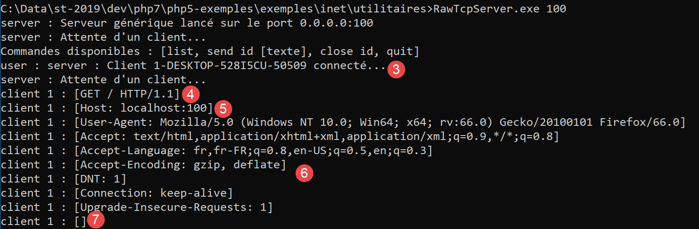
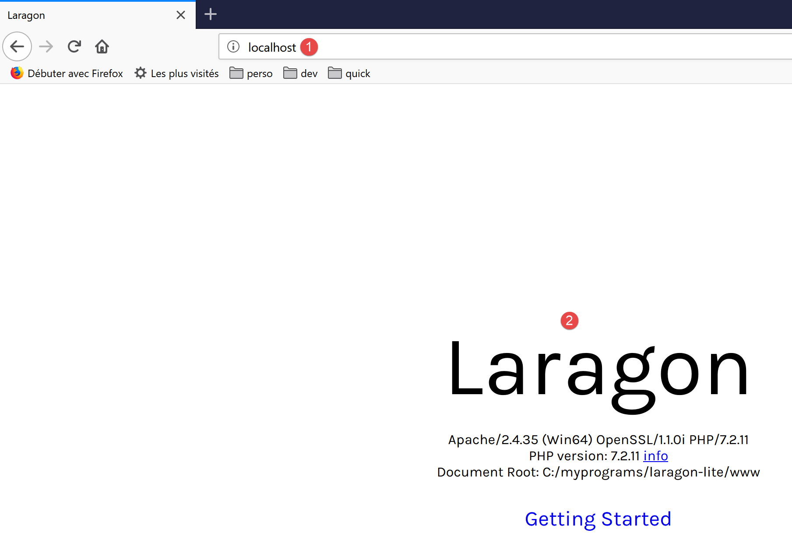
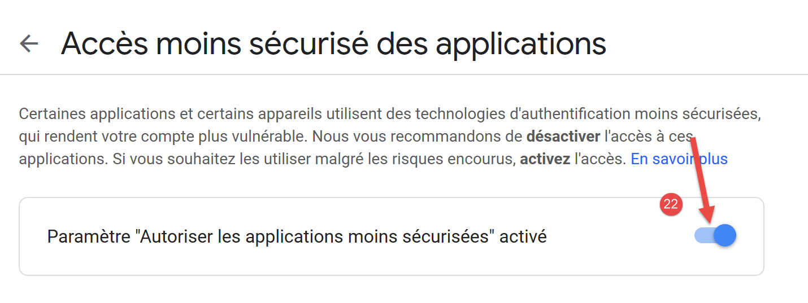
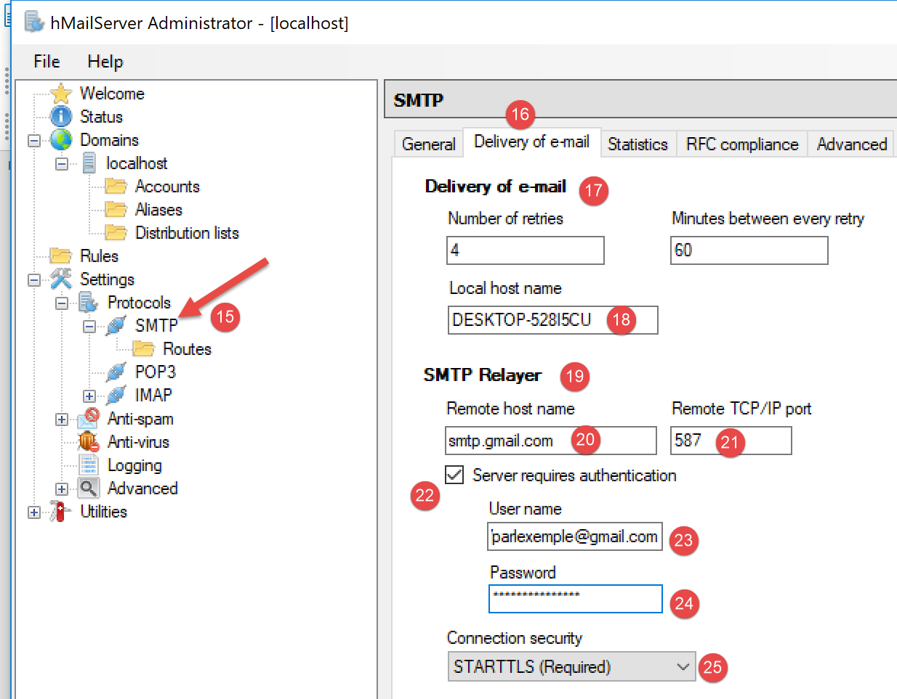
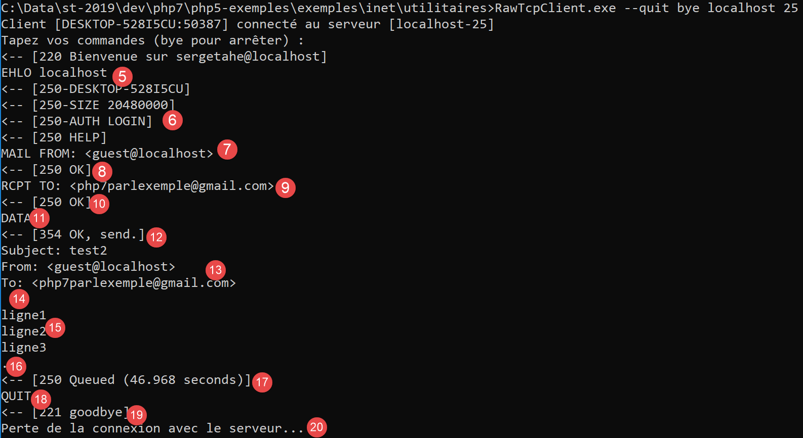
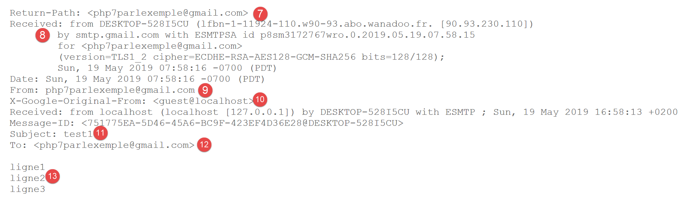
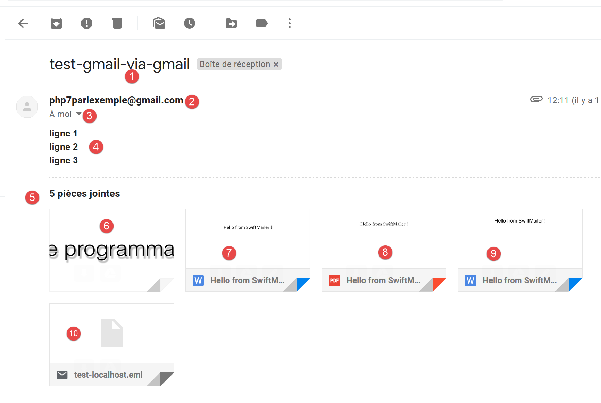
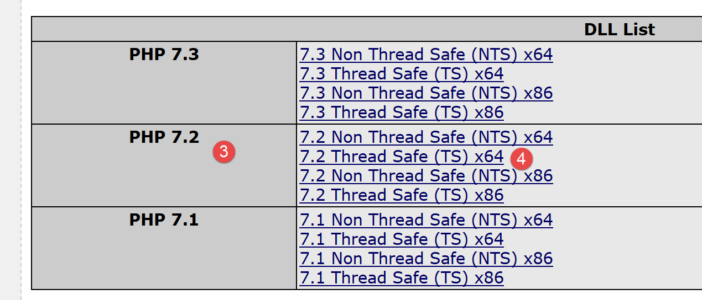

16. Funzioni di rete
Discuteremo ora delle funzioni di rete di PHP, che ci consentono di eseguire la programmazione TCP/IP (Transmission Control Protocol/Internet Protocol).

16.1. Nozioni di base sulla programmazione Internet
16.1.1. Panoramica generale
Consideriamo la comunicazione tra due macchine remote, A e B:

Quando un'applicazione AppA sul computer A vuole comunicare con un'applicazione AppB sul computer B su Internet, deve sapere diverse cose:
- l'indirizzo IP (Internet Protocol) o il nome del computer B;
- il numero di porta utilizzato dall'applicazione AppB. Infatti, la macchina B può ospitare molte applicazioni in esecuzione su Internet. Quando riceve informazioni dalla rete, deve sapere a quale applicazione sono destinate tali informazioni. Le applicazioni sulla macchina B accedono alla rete tramite interfacce note anche come porte di comunicazione. Queste informazioni sono contenute nel pacchetto ricevuto dalla macchina B in modo che possa essere consegnato all'applicazione corretta;
- i protocolli di comunicazione compresi dalla macchina B. Nel nostro studio, useremo solo i protocolli TCP-IP;
- il protocollo di comunicazione supportato dall'applicazione AppB. Infatti, le macchine A e B "comunicheranno" tra loro. Ciò che si scambieranno sarà incapsulato all'interno dei protocolli TCP/IP. Tuttavia, quando, alla fine della catena, l'applicazione AppB riceve le informazioni inviate dall'applicazione AppA, deve essere in grado di interpretarle. Ciò è analogo alla situazione in cui due persone, A e B, comunicano per telefono: la loro conversazione è veicolata dal telefono. Il parlato viene codificato come una serie di segnali dal telefono A, trasmessi sulle linee telefoniche, e arriva al telefono B per essere decodificato . La persona B sente quindi il parlato. È qui che entra in gioco il concetto di protocollo di comunicazione: se A parla francese e B non capisce quella lingua, A e B non saranno in grado di comunicare efficacemente;
Pertanto, le due applicazioni che comunicano devono concordare il tipo di dialogo che useranno. Ad esempio, il dialogo con un servizio FTP non è lo stesso di quello con un servizio POP: questi due servizi non accettano gli stessi comandi. Hanno un protocollo di dialogo diverso;
16.1.2. Caratteristiche del protocollo TCP
In questa sede esamineremo solo le comunicazioni di rete che utilizzano il protocollo di trasporto TCP, le cui caratteristiche principali sono le seguenti:
- Il processo che desidera trasmettere dati stabilisce innanzitutto una connessione con il processo che riceverà le informazioni che sta per trasmettere. Questa connessione viene stabilita tra una porta sulla macchina mittente e una porta sulla macchina ricevente. Viene così creato un percorso virtuale tra le due porte, che sarà riservato esclusivamente ai due processi che hanno stabilito la connessione;
- Tutti i pacchetti inviati dal processo di origine seguono questo percorso virtuale e arrivano nell'ordine in cui sono stati inviati;
- le informazioni trasmesse appaiono continue. Il processo mittente invia le informazioni al proprio ritmo. Queste informazioni non vengono necessariamente inviate immediatamente: il protocollo TCP attende di averne a sufficienza da inviare. Esse vengono memorizzate in una struttura chiamata segmento TCP. Una volta che questo segmento è pieno, viene trasmesso al livello IP, dove viene incapsulato in un pacchetto IP;
- Ogni segmento inviato dal protocollo TCP è numerato. Il protocollo TCP ricevente verifica di ricevere i segmenti in sequenza. Per ogni segmento ricevuto correttamente, invia un riconoscimento al mittente;
- quando il mittente lo riceve, ne informa il processo di invio. Il processo di invio può così confermare che un segmento è arrivato a destinazione;
- se, dopo un certo periodo di tempo, il protocollo TCP che ha inviato un segmento non riceve un riconoscimento, ritrasmette il segmento in questione, garantendo così la qualità del servizio di consegna delle informazioni;
- il circuito virtuale stabilito tra i due processi in comunicazione è full-duplex: ciò significa che le informazioni possono fluire in entrambe le direzioni. Pertanto, il processo di destinazione può inviare conferme anche mentre il processo di origine continua a inviare informazioni. Ciò consente, ad esempio, al protocollo TCP di origine di inviare più segmenti senza attendere una conferma. Se, dopo un certo periodo di tempo, si rende conto di non aver ricevuto un riconoscimento per uno specifico segmento n, riprenderà l'invio dei segmenti da quel punto;
16.1.3. Il rapporto client-server
La comunicazione su Internet è spesso asimmetrica: la macchina A avvia una connessione per richiedere un servizio alla macchina B, specificando che desidera aprire una connessione con il servizio SB1 sulla macchina B. La macchina B accetta o rifiuta. Se accetta, la macchina A può inviare le sue richieste al servizio SB1. Queste richieste devono essere conformi al protocollo di comunicazione compreso dal servizio SB1. Si instaura così un dialogo richiesta-risposta tra la macchina A, detta macchina client, e la macchina B, detta macchina server. Uno dei due partner chiuderà la connessione.
16.1.4. Architettura client
L'architettura di un programma di rete che richiede i servizi di un'applicazione server sarà la seguente:
ouvrir la connexion avec le service SB1 de la machine B
si réussite alors
tant que ce n'est pas fini
préparer une demande
l'émettre vers la machine B
attendre et récupérer la réponse
la traiter
fin tant que
finsi
fermer la connexion
16.1.5. Architettura del server
L'architettura di un programma che offre servizi sarà la seguente:
ouvrir le service sur la machine locale
tant que le service est ouvert
se mettre à l'écoute des demandes de connexion sur un port dit port d'écoute
lorsqu'il y a une demande, la faire traiter par une autre tâche sur un autre port dit port de service
fin tant que
Il programma server gestisce la richiesta di connessione iniziale di un client in modo diverso rispetto alle successive richieste di servizio. Il programma non fornisce il servizio direttamente. Se lo facesse, non sarebbe più in ascolto delle richieste di connessione mentre il servizio è in corso e i client non verrebbero serviti. Proceda quindi in modo diverso: non appena una richiesta di connessione viene ricevuta sulla porta di ascolto e quindi accettata, il server crea un'attività responsabile di fornire il servizio richiesto dal client. Questo servizio viene fornito su un'altra porta della macchina server chiamata porta di servizio. Ciò consente di servire più client contemporaneamente.
Un'attività di servizio avrà la seguente struttura:
tant que le service n'a pas été rendu totalement
attendre une demande sur le port de service
lorsqu'il y en a une, élaborer la réponse
transmettre la réponse via le port de service
fin tant que
libérer le port de service
16.2. Scopri i protocolli di comunicazione Internet
16.2.1. Introduzione
Quando un client si connette a un server, viene stabilito un dialogo tra i due. La natura di questo dialogo costituisce ciò che è noto come protocollo di comunicazione del server. Tra i protocolli Internet più comuni vi sono i seguenti:
- HTTP: HyperText Transfer Protocol – il protocollo utilizzato per comunicare con un server web (server HTTP);
- SMTP: Simple Mail Transfer Protocol – il protocollo per comunicare con un server di invio e-mail (server SMTP);
- POP: Post Office Protocol – il protocollo per comunicare con un server di archiviazione della posta elettronica (server POP). Viene utilizzato per recuperare le e-mail ricevute, non per inviarle;
- IMAP: Internet Message Access Protocol – il protocollo per comunicare con un server di archiviazione della posta elettronica (server IMAP). Questo protocollo ha gradualmente sostituito il vecchio protocollo POP;
- FTP: File Transfer Protocol – il protocollo per comunicare con un server di archiviazione file (server FTP);
Tutti questi protocolli sono basati su testo: il client e il server si scambiano righe di testo. Se si dispone di un client in grado di:
- stabilire una connessione con un server TCP;
- visualizzare sulla console le righe di testo inviate dal server;
- inviare al server le righe di testo che un utente digiterebbe sulla tastiera;
allora siamo in grado di comunicare con un server TCP utilizzando un protocollo basato su testo, a condizione di conoscere le regole di quel protocollo.
16.2.2. Utilità TCP

Nel codice associato a questo documento, sono presenti due utilità di comunicazione TCP:
- [RawTcpClient] consente di connettersi alla porta P di un server S;
- [RawTcpServer] crea un server che ascolta i client sulla porta P;
Il server TCP [RawTcpServer] viene chiamato utilizzando la sintassi [RawTcpServer porta] per creare un servizio TCP sulla porta [porta] della macchina locale (il computer su cui si sta lavorando):
- il server può servire più client contemporaneamente;
- il server esegue i comandi digitati dall'utente sulla tastiera. Questi sono i seguenti:
- list: elenca i client attualmente connessi al server. Questi vengono visualizzati nel formato [id=x-name=y]. Il campo [id] viene utilizzato per identificare i client;
- send x [testo]: invia il testo al client n. x (id=x). Le parentesi quadre [] non vengono inviate. Sono necessarie nel comando. Sono utilizzate per delimitare visivamente il testo inviato al client;
- close x: chiude la connessione con il client #x;
- quit: chiude tutte le connessioni e arresta il servizio;
- Le righe inviate dal client al server vengono visualizzate sulla console;
- Tutti gli scambi vengono registrati in un file di testo denominato [machine-portService.txt], dove
- [machine] è il nome della macchina su cui è in esecuzione il codice;
- [port] è la porta di servizio che risponde alle richieste del client;
Il client TCP [RawTcpClient] viene chiamato utilizzando la sintassi [RawTcpClient server port] per connettersi alla porta [port] sul server [server]:
- le righe digitate dall'utente sulla tastiera vengono inviate al server;
- le righe inviate dal server vengono visualizzate sulla console;
- Tutte le comunicazioni vengono registrate in un file di testo denominato [server-port.txt];
Vediamo un esempio. Apri due finestre del Prompt dei comandi di Windows e accedi alla cartella delle utilità in ciascuna di esse. In una delle finestre, avvia il server [RawTcpServer] sulla porta 100:

- in [1], ci troviamo nella cartella utilities;
- in [2], avviamo il server TCP sulla porta 100;
- in [3], il server attende un client TCP;
- in [4], il server attende un comando immesso dall'utente tramite la tastiera;
Nell'altra finestra di comando, avviamo il client TCP:

- In [5], ci troviamo nella cartella delle utility;
- in [6], avviamo il client TCP: gli diciamo di connettersi alla porta 100 sulla macchina locale (quella su cui stai lavorando);
- in [7], il client si è connesso con successo al server. Vengono visualizzati i dettagli del client: si trova sulla macchina [DESKTOP-528I5CU] (la macchina locale in questo esempio) e utilizza la porta [50405] per comunicare con il server:
- In [8], il client è in attesa di un comando immesso dall'utente tramite la tastiera;
Torniamo alla finestra del server. Il suo contenuto è cambiato:

- In [9], è stato rilevato un client. Il server gli ha assegnato il numero 1. Il server ha identificato correttamente il client remoto (macchina e porta);
- in [10], il server torna ad attendere un nuovo client;
Torniamo alla finestra del client e inviamo un comando al server:

- in [11], il comando inviato al server;
Torniamo alla finestra del server. Il suo contenuto è cambiato:

- in [12], tra parentesi quadre, il messaggio ricevuto dal server;
Inviamo una risposta al client:

- in [13], la risposta inviata al client 1. Viene inviato solo il testo tra le parentesi, non le parentesi stesse;
Torniamo alla finestra del client:

- in [14], la risposta ricevuta dal client. Il testo ricevuto è quello tra parentesi quadre;
Torniamo alla finestra del server per vedere altri comandi:

- in [15], richiediamo l'elenco dei client;
- in [16], la risposta;
- in [17], chiudiamo la connessione con il client n. 1;
- in [18], la conferma del server;
- in [19], spegniamo il server;
- in [20], la conferma del server;
Torniamo alla finestra del client:

- in [21], il client ha rilevato la fine del servizio;
Sono stati creati due file di log, uno per il server e uno per il client:

- in [25], il server registra: il nome del file è il nome del client [macchina-porta];
- in [26], il client registra: il nome del file è il nome del server [macchina-porta];
I log del server sono i seguenti:
I log del client sono i seguenti:
16.3. Come trovare il nome o l'indirizzo IP di un computer su Internet

I computer su Internet sono identificati da un indirizzo IP (IPv4 o IPv6) e, il più delle volte, da un nome. Tuttavia, in definitiva viene utilizzato solo l'indirizzo IP. Pertanto, a volte è necessario conoscere l'indirizzo IP di un computer identificato dal suo nome.
Lo script [ip-01.php] è il seguente:
<?php
// strict adherence to declared function parameter types
declare (strict_types=1);
//
// error management
error_reporting(E_ALL & E_STRICT);
ini_set("display_errors", "on");
//
// constants
$HOTES = array("istia.univ-angers.fr", "www.univ-angers.fr", "www.ibm.com", "localhost", "", "xx");
// IP addresses and $HOTES machine names
for ($i = 0; $i < count($HOTES); $i++) {
getIPandName($HOTES[$i]);
}
// end
print "Terminé\n";
exit;
//------------------------------------------------
function getIPandName(string $nomMachine): void {
//$nomMachine: name of the machine whose address is required IP: name of the machine whose address is required IP: name of the machine whose address is required
//
// nomMachine-->adresse IP
$ip = gethostbyname($nomMachine);
print "---------------\n";
if ($ip !== $nomMachine) {
print "ip[$nomMachine]=$ip\n";
// address IP --> nomMachine
$name = gethostbyaddr($ip);
if ($name !== $ip) {
print "name[$ip]=$name\n";
} else {
print "Erreur, machine[$ip] non trouvée\n";
}
} else {
print "Erreur, machine[$nomMachine] non trouvée\n";
}
}
Commenti
- righe 7-8: indichiamo a PHP di segnalare tutti gli errori (E_ALL e E_STRICT) e di visualizzarli. Questa modalità è consigliata solo in fase di sviluppo per migliorare il codice utilizzando gli avvisi di PHP. In modalità produzione, alla riga 8, la imposteremmo su "off". A partire da PHP 5.4, il livello E_STRICT è incluso in E_ALL;
- Riga 11: L'elenco delle macchine di cui vogliamo il nome e l'indirizzo IP;
Le funzioni di rete di PHP sono utilizzate nella funzione getIpandName alla riga 21.
- riga 25: la funzione gethostbyname($name) recupera l'indirizzo IP "ip3.ip2.ip1.ip0" della macchina denominata $name. Se la macchina $name non esiste, la funzione restituisce $name come risultato;
- Riga 30: la funzione gethostbyaddr($ip) recupera il nome della macchina associato all'indirizzo IP $ip nel formato "ip3.ip2.ip1.ip0". Se la macchina $ip non esiste, la funzione restituisce $ip come risultato;
Risultati:
---------------
ip[istia.univ-angers.fr]=193.49.144.41
name[193.49.144.41]=ametys-fo-2.univ-angers.fr
---------------
ip[www.univ-angers.fr]=193.49.144.41
name[193.49.144.41]=ametys-fo-2.univ-angers.fr
---------------
ip[www.ibm.com]=2.18.220.211
name[2.18.220.211]=a2-18-220-211.deploy.static.akamaitechnologies.com
---------------
ip[localhost]=127.0.0.1
name[127.0.0.1]=DESKTOP-528I5CU
---------------
ip[]=192.168.1.38
name[192.168.1.38]=DESKTOP-528I5CU.home
---------------
Erreur, machine[xx] non trouvée
Terminé
16.4. Il protocollo HTTP (HyperText Transfer Protocol)
16.4.1. Esempio 1

Quando un browser visualizza un URL, agisce come client di un server web, ovvero di un server HTTP. Prende l'iniziativa e inizia inviando una serie di comandi al server. Per questo primo esempio:
- il server sarà l'utilità [RawTcpServer];
- il client sarà un browser;
Per prima cosa, avviamo il server sulla porta 100:

Quindi, utilizzando un browser, richiediamo l'URL [localhost:100], il che significa che specifichiamo che il server HTTP che stiamo interrogando è in esecuzione sulla porta 100 della macchina locale:

Torniamo alla finestra del server:

- in [3], il client che si è connesso;
- in [4-7], la serie di righe di testo che ha inviato:
- in [4]: questa riga ha il formato [GET URL HTTP/1.1]. Richiede l'URL / e indica al server di utilizzare il protocollo HTTP 1.1;
- in [5]: questa riga ha il formato [Host: server:port]. Non importa se il comando [Host] è maiuscolo o minuscolo. Si noti che il client sta interrogando un server locale che opera sulla porta 100;
- il comando [User-Agent] identifica il client;
- il comando [Accept] specifica quali tipi di documento sono accettati dal client;
- il comando [Accept-Language] specifica la lingua in cui si desidera ricevere i documenti richiesti, qualora questi siano disponibili in più lingue;
- il comando [Connection] specifica la modalità di connessione desiderata: [keep-alive] indica che la connessione deve essere mantenuta fino al completamento dello scambio;
- in [7]: il client termina i propri comandi con una riga vuota;
Terminiamo la connessione spegnendo il server:

16.4.2. Esempio 2
Ora che conosciamo i comandi inviati da un browser per richiedere un URL, richiederemo questo URL utilizzando il nostro client TCP [RawTcpClient]. Il server Apache di Laragon fungerà da nostro server web.
Avviamo Laragon e poi il server web Apache:


Ora, utilizzando un browser, richiediamo l'URL [http://localhost:80]. Qui specifichiamo solo il server [localhost:80] e nessun URL del documento. In questo caso, viene richiesto l'URL /, ovvero la radice del server web:

- in [1], l’URL richiesto. Inizialmente abbiamo digitato [http://localhost:80], e il browser (qui Firefox) lo ha semplicemente convertito in [localhost] poiché il protocollo [http] è implicito quando non viene specificato alcun protocollo, e la porta [80] è implicita quando la porta non è specificata;
- in [2], la pagina radice / del server web interrogato;
Ora, visualizziamo il testo ricevuto dal browser:

- Fai clic con il tasto destro sulla pagina e seleziona l'opzione [2]. Vedrai il seguente codice sorgente:
<!DOCTYPE HTML>
<HTML>
<head>
<title>Laragon</title>
<link href="https://fonts.googleapis.com/css?family=Karla:400" rel="stylesheet" type="text/css">
<style>
HTML, body {
height: 100%;
}
body {
margin: 0;
padding: 0;
width: 100%;
display: table;
font-weight: 100;
font-family: 'Karla';
}
.container {
text-align: center;
display: table-cell;
vertical-align: middle;
}
.content {
text-align: center;
display: inline-block;
}
.title {
font-size: 96px;
}
.opt {
margin-top: 30px;
}
.opt a {
text-decoration: none;
font-size: 150%;
}
a:hover {
color: red;
}
</style>
</head>
<body>
<div class="container">
<div class="content">
<div class="title" title="Laragon">Laragon</div>
<div class="info"><br />
Apache/2.4.35 (Win64) OpenSSL/1.1.0i PHP/7.2.11<br />
PHP version: 7.2.11 <span><a title="phpinfo()" href="/?q=info">info</a></span><br />
Document Root: C:/myprograms/laragon-lite/www<br />
</div>
<div class="opt">
<div><a title="Getting Started" href="https://laragon.org/docs">Getting Started</a></div>
</div>
</div>
</div>
</body>
</HTML>
Ora richiediamo l'URL [http://localhost:80] utilizzando il nostro client TCP:

- In [1], ci connettiamo alla porta 80 sul server localhost. È qui che gira il server web Laragon;
Ora digitiamo i comandi che abbiamo scoperto nel paragrafo precedente:

- in [1], il comando [GET]. Richiediamo la directory principale / del server web;
- in [2], il comando [Host];
- questi sono gli unici due comandi essenziali. Per gli altri comandi, il server web utilizzerà i valori predefiniti;
- in [3], la riga vuota che deve concludere i comandi del client;
- sotto la riga 3 c'è la risposta del server web;
- in [4] fino alla riga vuota [5] ci sono le intestazioni HTTP della risposta del server;
- dopo la riga [5] segue il documento HTML richiesto [6];
Digitiamo [quit] per uscire dal client e scaricare il file di log [localhost-80.txt]:
- Righe 11–79: il documento HTML ricevuto. Nell'esempio precedente, Firefox ha ricevuto lo stesso documento;
Ora disponiamo delle nozioni di base per programmare un client TCP in grado di richiedere un URL.
16.4.3. Esempio 3

Lo script [http-01.php] è un client HTTP configurato dal file JSON [config-http-01.json]. Il contenuto del file è il seguente:
- riga 2: il nome del computer che ospita il server web da raggiungere;
- riga 3: la porta su cui opera questo server web;
- riga 4: l'URL del documento desiderato;
- riga 5: la macchina di destinazione nel formato macchina:porta;
- riga 6: l'identificativo del client HTTP: puoi inserire quello che vuoi;
- riga 7: il tipo di documento accettato dal client, in questo caso testo HTML;
- riga 8: la lingua desiderata per il documento richiesto;
- riga 9: il carattere di fine riga per i comandi inviati dal client: questo può variare a seconda che il server sia in esecuzione su una macchina Unix (\n) o su una macchina Windows (\r\n);
Lo script [http-01.php] è il seguente:
<?php
// strict adherence to declared types of function parameters
declare (strict_types=1);
//
// error management
// error_reporting(E_ALL & E_STRICT);
// ini_set("display_errors", "on");
//
// constants
const CONFIG_FILE_NAME = "config-http-01.json";
//
// we retrieve the configuration
$config = \json_decode(\file_get_contents(CONFIG_FILE_NAME), true);
// otain the HTML text from the URL configuration file
foreach ($config as $site => $protocole) {
// read site index page $ite
$résultat = getURL($site, $protocole);
// result display
print "$résultat\n";
}//for
// end
exit;
//-----------------------------------------------------------------------
function getURL(string $site, array $protocole, $suivi = TRUE): string {
// reads the URL $site["GET"] and stores it in the $site.HTML file
// client/server dialog is based on the $protocole protocol
//
// open a connection on the $site port
$erreurNumber = 0;
$erreur = "";
$connexion = fsockopen($site, $protocole["port"], $erreurNumber, $erreur);
// return if error
if ($connexion === FALSE) {
return "Echec de la connexion au site (" . $site . " ," . $protocole["port"] . " : $erreur";
}
// $connexion represents a bidirectional communication flow
// between the client (this program) and the contacted web server
// this channel is used for the exchange of orders and information
// the dialog protocol is HTTP
//
// creation of the $site.HTML file
$HTML = fopen("output/$site.HTML", "w");
if ($HTML === FALSE) {
// close client/server connection
fclose($connexion);
// error return
return "Erreur lors de la création du fichier $site.HTML";
}
// the client will start the HTTP dialog with the server
if ($suivi) {
print "Client : début de la communication avec le serveur [$site] ----------------------------\n";
}
// depending on the server, client lines must end with \nor \r\n
$endOfLine = $protocole["endOfLine"];
// for simplicity's sake, we don't test for errors in client/server communication
// the customer sends the GET command to request the URL $protocole["GET"]
// syntax GET URL HTTP/1.1
$commande = "GET " . $protocole["GET"] . " HTTP/1.1$endOfLine";
// followed?
if ($suivi) {
print "--> $commande";
}
// send the command to the server
fputs($connexion, $commande);
// issue other headers HTTP
foreach ($protocole as $verb => $value) {
if ($verb !== "GET" && $verb != "port"" && $verb !="endOfLine") {
// we build the
$commande = "$verb: $value$endOfLine";
// followed?
if ($suivi) {
print "--> $commande";
}
// send the command to the server
fputs($connexion, $commande);
}
}
// protocol HTTP headers must end with an empty line
fputs($connexion, $endOfLine);
//
// the server will now respond on channel $connexion. It will send all
// then close the channel. The client therefore reads everything that arrives from $connexion
// until the channel closes
//
// we first read the HTTP headers sent by the server
// they also end with an empty line
if ($suivi) {
print "Réponse du serveur [$site] ----------------------------\n";
}
$fini = FALSE;
while (!$fini && $ligne = fgets($connexion, 1000)) {
// is there an empty line?
$champs = [];
preg_match("/^(.*?)\s+$/", $ligne, $champs);
if ($champs[1] !== "") {
if ($suivi) {
// header HTTP is displayed
print "<-- " . $champs[1] . "\n";
}
} else {
// this was the empty line - HTTP headers are finished
$fini = TRUE;
}
}
// we read the HTML document that will follow the empty line
while ($ligne = fgets($connexion, 1000)) {
// we save the line in the HTML file on the site
fputs($HTML, $ligne);
}
// the server has closed the connection - the client closes it in turn
fclose($connexion);
// close file $HTML
fclose($HTML);
// return
return "Fin de la communication avec le site [$site]. Vérifiez le fichier [$site.HTML]";
}
Commenti sul codice:
- riga 14: il file di configurazione viene utilizzato per creare un dizionario:
- le chiavi del dizionario sono i server web da interrogare;
- i valori specificano il protocollo HTTP da utilizzare;
- righe 16–21: si esegue un ciclo attraverso l'elenco dei server web nella configurazione;
- Riga 26: la funzione getURL($site, $protocol, $log) recupera un documento dal sito web $site e lo salva nel file di testo $site.HTML. Per impostazione predefinita, le interazioni client/server vengono registrate nella console ($log=TRUE);
- Riga 33: la funzione fsockopen($site,$port,$errNumber,$error) crea una connessione con un servizio TCP/IP in esecuzione sulla porta $port sul computer $site. Se la connessione fallisce, [$errNumber] è un codice di errore e [$error] è il messaggio di errore associato. Una volta aperta la connessione client/server, molti servizi TCP/IP scambiano righe di testo. È il caso, in questo contesto, del protocollo HTTP (HyperText Transfer Protocol). Il flusso di dati dal server al client può quindi essere trattato come un file di testo letto tramite [fgets]. Lo stesso vale per il flusso di dati dal client al server, che può essere scritto utilizzando [fputs];
- righe 44–50: creazione del file [$site.HTML] in cui verrà memorizzato il documento HTML ricevuto;
- riga 60: il primo comando del client deve essere [GET URL HTTP/1.1];
- riga 66: la funzione fputs permette al client di inviare dati al server. In questo caso, la riga di testo inviata ha il seguente significato: "Voglio (GET) la pagina [URL] del sito web a cui sono connesso. Sto usando la versione 1.1 di HTTP";
- righe 68–79: vengono inviate le altre righe del protocollo HTTP [Host, User-Agent, Accept, Accept-Language]. Il loro ordine non ha importanza;
- Riga 81: viene inviata una riga vuota al server per indicare che il client ha terminato l'invio delle intestazioni HTTP e sta ora aspettando il documento richiesto;
- righe 92–106: il server invierà prima una serie di intestazioni HTTP che forniscono vari dettagli sul documento richiesto. Queste intestazioni terminano con una riga vuota;
- riga 93: una riga inviata dal server viene letta utilizzando la funzione PHP [fgets];
- riga 96: recuperiamo il corpo della riga senza gli spazi (spazi bianchi, caratteri di fine riga) alla fine della riga;
- riga 97: si verifica se è stata recuperata la riga vuota che segna la fine delle intestazioni HTTP inviate dal server;
- righe 98–101: se in modalità [trace], l'intestazione HTTP ricevuta viene visualizzata nella console;
- righe 108–111: le righe di testo della risposta del server possono essere lette riga per riga utilizzando un ciclo while e salvate nel file di testo [output/$site.HTML]. Quando il server web ha inviato l'intera pagina richiesta, chiude la connessione con il client. Sul lato client, ciò verrà rilevato come fine del file;
Risultati:
La console visualizza i seguenti log:
Client : début de la communication avec le serveur [localhost] ----------------------------
--> GET / HTTP/1.1
--> Host: localhost:80
--> User-Agent: client PHP
--> Accept: text/HTML
--> Accept-Language: fr
Réponse du serveur [localhost] ----------------------------
<-- HTTP/1.1 200 OK
<-- Date: Thu, 16 May 2019 15:43:18 GMT
<-- Server: Apache/2.4.35 (Win64) OpenSSL/1.1.0i PHP/7.2.11
<-- X-Powered-By: PHP/7.2.11
<-- Content-Length: 1781
<-- Content-Type: text/HTML; charset=UTF-8
Fin de la communication avec le site [localhost]. Vérifiez le fichier [localhost.HTML]
Nel nostro esempio, il file [output/localhost.HTML] ricevuto è il seguente:
<!DOCTYPE HTML>
<HTML>
<head>
<title>Laragon</title>
<link href="https://fonts.googleapis.com/css?family=Karla:400" rel="stylesheet" type="text/css">
<style>
HTML, body {
height: 100%;
}
body {
margin: 0;
padding: 0;
width: 100%;
display: table;
font-weight: 100;
font-family: 'Karla';
}
.container {
text-align: center;
display: table-cell;
vertical-align: middle;
}
.content {
text-align: center;
display: inline-block;
}
.title {
font-size: 96px;
}
.opt {
margin-top: 30px;
}
.opt a {
text-decoration: none;
font-size: 150%;
}
a:hover {
color: red;
}
</style>
</head>
<body>
<div class="container">
<div class="content">
<div class="title" title="Laragon">Laragon</div>
<div class="info"><br />
Apache/2.4.35 (Win64) OpenSSL/1.1.0i PHP/7.2.11<br />
PHP version: 7.2.11 <span><a title="phpinfo()" href="/?q=info">info</a></span><br />
Document Root: C:/myprograms/laragon-lite/www<br />
</div>
<div class="opt">
<div><a title="Getting Started" href="https://laragon.org/docs">Getting Started</a></div>
</div>
</div>
</div>
</body>
</HTML>
Abbiamo effettivamente ottenuto lo stesso documento che avevamo con il browser Firefox.
16.4.4. Esempio 4
In questo esempio, dimostreremo che il client HTTP che abbiamo scritto è insufficiente. Modifica il file di configurazione [config-http-01.json] come segue:
Qui, richiederemo l'URL [http://tahe.developpez.com:443/]. La porta 443 sul computer [tahe.developpez.com] è una porta utilizzata per il protocollo HTTP sicuro noto come HTTPS. In questo protocollo, l'interazione client-server inizia con uno scambio di informazioni che protegge la connessione. Il client deve quindi utilizzare il protocollo [HTTPS] anziché il protocollo [HTTP], cosa che il nostro client non fa.
Con questo file di configurazione, l'output della console è il seguente:
Client : début de la communication avec le serveur [tahe.developpez.com] ----------------------------
--> GET / HTTP/1.1
--> Host: sergetahe.com:443
--> User-Agent: script PHP 7
--> Accept: text/HTML
--> Accept-Language: fr
Réponse du serveur [tahe.developpez.com] ----------------------------
<-- HTTP/1.1 400 Bad Request
<-- Date: Fri, 17 May 2019 13:02:26 GMT
<-- Server: Apache/2.4.25 (Debian)
<-- Content-Length: 454
<-- Connection: close
<-- Content-Type: text/HTML; charset=iso-8859-1
Fin de la communication avec le site [tahe.developpez.com]. Vérifiez le fichier [output/tahe.developpez.com.HTML]
- riga 8: il server [tahe.developpez.com] ha risposto che la richiesta del client era errata;
Il contenuto del file [output/tahe.developpez.com.HTML] è il seguente:
<!DOCTYPE HTML PUBLIC "-//IETF//DTD HTML 2.0//EN">
<HTML><head>
<title>400 Bad Request</title>
</head><body>
<h1>Bad Request</h1>
<p>Your browser sent a request that this server could not understand.<br />
Reason: You're speaking plain HTTP to an SSL-enabled server port.<br />
Instead use the HTTPS scheme to access this URL, please.<br />
</p>
<hr>
<address>Apache/2.4.25 (Debian) Server at 2eurocents.developpez.com Port 443</address>
</body></HTML>
Il server indica chiaramente che non abbiamo utilizzato il protocollo corretto.
Ora utilizziamo il seguente file di configurazione:
L'output della console è il seguente:
Client : début de la communication avec le serveur [sergetahe.com] ----------------------------
--> GET /cours-tutoriels-de-programmation/ HTTP/1.1
--> Host: sergetahe.com:80
--> User-Agent: script PHP 7
--> Accept: text/HTML
--> Accept-Language: fr
Réponse du serveur [sergetahe.com] ----------------------------
<-- HTTP/1.1 200 OK
<-- Date: Fri, 17 May 2019 13:36:06 GMT
<-- Content-Type: text/HTML; charset=UTF-8
<-- Transfer-Encoding: chunked
<-- Server: Apache
<-- X-Powered-By: PHP/7.0
<-- Vary: Accept-Encoding
<-- Set-Cookie: SERVERID68971=2621207|XN64y|XN64y; path=/
<-- Cache-control: private
<-- X-IPLB-Instance: 17106
Fin de la communication avec le site [sergetahe.com]. Vérifiez le fichier [output/sergetahe.com.HTML]
- La riga 11 indica che il server sta inviando il documento in blocchi;
Ciò fa sì che nel flusso di dati inviato al client compaiano dei numeri: ogni numero indica al client il numero di caratteri contenuti nel blocco successivo inviato dal server. Ecco come appare nel file [output/sergetahe.com.HTML]:

- [1] e [2] rappresentano la dimensione esadecimale dei blocchi 1 e 2 del documento;
Un client HTTP corretto non dovrebbe lasciare questi numeri nel documento HTML finale.
Ecco un altro esempio:
È simile all'esempio precedente, ma l'URL richiesto alla riga 4 non termina con una /. Non si tratta degli stessi URL. L'esecuzione del client HTTP produce quindi il seguente output della console:
Client : début de la communication avec le serveur [sergetahe.com] ----------------------------
--> GET /cours-tutoriels-de-programmation HTTP/1.1
--> Host: sergetahe.com:80
--> User-Agent: script PHP 7
--> Accept: text/HTML
--> Accept-Language: fr
Réponse du serveur [sergetahe.com] ----------------------------
<-- HTTP/1.1 301 Moved Permanently
<-- Date: Fri, 17 May 2019 13:47:00 GMT
<-- Content-Type: text/HTML; charset=iso-8859-1
<-- Content-Length: 262
<-- Server: Apache
<-- Location: http://sergetahe.com:80/cours-tutoriels-de-programmation/
<-- Set-Cookie: SERVERID68971=2621207|XN67V|XN67V; path=/
<-- Cache-control: private
<-- X-IPLB-Instance: 17095
Fin de la communication avec le site [sergetahe.com]. Vérifiez le fichier [output/sergetahe.com.HTML]
- La riga 8 indica che il documento richiesto ha cambiato URL. Il nuovo URL è riportato alla riga 13. Notate che questa volta il carattere / conclude il nuovo URL;
Il file [output/serge.tahe.com.HTML] risulta quindi il seguente:
<!DOCTYPE HTML PUBLIC "-//IETF//DTD HTML 2.0//EN">
<HTML><head>
<title>301 Moved Permanently</title>
</head><body>
<h1>Moved Permanently</h1>
<p>The document has moved <a href="http://sergetahe.com/cours-tutoriels-de-programmation/">here</a>.</p>
</body></HTML>
Un client HTTP dovrebbe essere in grado di seguire i reindirizzamenti. In questo caso, dovrebbe richiedere automaticamente il nuovo URL [http://sergetahe.com/cours-tutoriels-de-programmation/].
16.4.5. Esempio 5
Gli esempi precedenti ci hanno mostrato che il nostro client HTTP era insufficiente. Introdurremo ora uno strumento chiamato [curl] che consente di recuperare documenti web gestendo le sfide menzionate: protocollo HTTPS, documenti inviati in blocchi, reindirizzamenti… Lo strumento [curl] è stato installato con Laragon:

Apriamo un terminale Laragon [1]:

Nel terminale, digita il seguente comando:

- in [1], il tipo di console;
- in [2], la directory corrente. Questa directory è speciale: è il luogo in cui il server Apache di Laragon recupera i documenti richiesti. Eviteremo quindi di ingombrare questa directory;
- in [3], il comando immesso;
Il comando [curl --help] potrebbe generare un errore. La causa più probabile è che non si disponga del tipo di terminale corretto. In questo caso, aprire un altro terminale con i comandi [4-6];
Il comando [curl --help] visualizza tutte le opzioni di configurazione di [curl]. Ce ne sono decine. Ne useremo solo alcune. Per richiedere un URL, basta digitare il comando [curl URL]. Questo comando visualizzerà il documento richiesto sulla console. Se si desidera vedere anche gli scambi HTTP tra il client e il server, digitare [curl --verbose URL]. Infine, per salvare il documento HTML richiesto in un file, digitare [curl --verbose --output file URL].
Per evitare di ingombrare la cartella [www] di Laragon, spostiamoci in un'altra posizione nel file system:

- in [1], vai alla cartella [c:\temp]. Se questa cartella non esiste, puoi crearla o sceglierne un'altra;
- in [2], creare una cartella denominata [curl];
- in [3], accedervi;
- in [4], visualizza il suo contenuto. È vuota;
Assicurati che il server Apache di Laragon sia in esecuzione e, utilizzando [curl], richiedi l'URL [http://localhost/] con il comando [curl –verbose –output localhost.HTML http://localhost/]. Otterrai i seguenti risultati:
c:\Temp\curl
λ curl --verbose --output localhost.HTML http://localhost/
% Total % Received % Xferd Average Speed Time Time Time Current
Dload Upload Total Spent Left Speed
0 0 0 0 0 0 0 0 --:--:-- --:--:-- --:--:-- 0* Trying ::1…
* TCP_NODELAY set
* Connected to localhost (::1) port 80 (#0)
> GET / HTTP/1.1
> Host: localhost
> User-Agent: curl/7.63.0
> Accept: */*
>
< HTTP/1.1 200 OK
< Date: Fri, 17 May 2019 14:32:47 GMT
< Server: Apache/2.4.35 (Win64) OpenSSL/1.1.0i PHP/7.2.11
< X-Powered-By: PHP/7.2.11
< Content-Length: 1781
< Content-Type: text/HTML; charset=UTF-8
<
{ [1781 bytes data]
100 1781 100 1781 0 0 14248 0 --:--:-- --:--:-- --:--:-- 14248
* Connection #0 to host localhost left intact
- righe 8-12: righe inviate da [curl] al server [localhost]. Il protocollo HTTP viene riconosciuto;
- righe 13–19: righe inviate in risposta dal server;
- riga 13: indica che il documento richiesto è stato ricevuto con successo;
Il file [localhost.HTML] contiene il documento richiesto. È possibile verificarlo aprendo il file in un editor di testo.
Ora richiediamo l'URL [https://tahe.developpez.com:443/]. Per recuperare questo URL, il client HTTP deve supportare HTTPS. Questo è il caso del client [curl].
L'output della console è il seguente:
c:\Temp\curl
λ curl --verbose --output tahe.developpez.com.HTML https://tahe.developpez.com:443/
% Total % Received % Xferd Average Speed Time Time Time Current
Dload Upload Total Spent Left Speed
0 0 0 0 0 0 0 0 --:--:-- --:--:-- --:--:-- 0* Trying 87.98.130.52…
* TCP_NODELAY set
* Connected to tahe.developpez.com (87.98.130.52) port 443 (#0)
* ALPN, offering h2
* ALPN, offering http/1.1
* successfully set certificate verify locations:
* CAfile: C:\myprograms\laragon-lite\bin\laragon\utils\curl-ca-bundle.crt
CApath: none
} [5 bytes data]
* TLSv1.3 (OUT), TLS handshake, Client hello (1):
} [512 bytes data]
* TLSv1.3 (IN), TLS handshake, Server hello (2):
{ [108 bytes data]
* TLSv1.2 (IN), TLS handshake, Certificate (11):
{ [2558 bytes data]
* TLSv1.2 (IN), TLS handshake, Server key exchange (12):
{ [333 bytes data]
* TLSv1.2 (IN), TLS handshake, Server finished (14):
{ [4 bytes data]
* TLSv1.2 (OUT), TLS handshake, Client key exchange (16):
} [70 bytes data]
* TLSv1.2 (OUT), TLS change cipher, Change cipher spec (1):
} [1 bytes data]
* TLSv1.2 (OUT), TLS handshake, Finished (20):
} [16 bytes data]
* TLSv1.2 (IN), TLS handshake, Finished (20):
{ [16 bytes data]
* SSL connection using TLSv1.2 / ECDHE-RSA-AES128-GCM-SHA256
* ALPN, server accepted to use http/1.1
* Server certificate:
* subject: CN=*.developpez.com
* start date: Apr 4 08:25:09 2019 GMT
* expire date: Jul 3 08:25:09 2019 GMT
* subjectAltName: host "tahe.developpez.com" matched cert's "*.developpez.com"
* issuer: C=US; O=Let's Encrypt; CN=Let's Encrypt Authority X3
* SSL certificate verify ok.
} [5 bytes data]
> GET / HTTP/1.1
> Host: tahe.developpez.com
> User-Agent: curl/7.63.0
> Accept: */*
>
{ [5 bytes data]
< HTTP/1.1 200 OK
< Date: Fri, 17 May 2019 14:39:41 GMT
< Server: Apache/2.4.25 (Debian)
< X-Powered-By: PHP/5.3.29
< Vary: Accept-Encoding
< Transfer-Encoding: chunked
< Content-Type: text/HTML
<
{ [6 bytes data]
100 96559 0 96559 0 0 163k 0 --:--:-- --:--:-- --:--:-- 163k
* Connection #0 to host tahe.developpez.com left intact
- righe 10–40: scambi client/server per proteggere la connessione: questa verrà crittografata;
- righe 42-45: le intestazioni HTTP inviate dal client [curl] al server;
- riga 48: il documento richiesto è stato trovato;
- riga 53: il documento viene inviato in blocchi;
[curl] gestisce correttamente sia il protocollo HTTPS sicuro sia il fatto che il documento venga inviato a blocchi. Il documento inviato è disponibile qui nel file [tahe.developpez.com.HTML].
Ora richiediamo l'URL [http://sergetahe.com/cours-tutoriels-de-programmation]. Abbiamo visto che per questo URL c'era un reindirizzamento all'URL [http://sergetahe.com/cours-tutoriels-de-programmation/] (con una / alla fine).
L'output della console è il seguente:
c:\Temp\curl
λ curl --verbose --output sergetahe.com.HTML --location http://sergetahe.com/cours-tutoriels-de-programmation
% Total % Received % Xferd Average Speed Time Time Time Current
Dload Upload Total Spent Left Speed
0 0 0 0 0 0 0 0 --:--:-- --:--:-- --:--:-- 0* Trying 87.98.154.146…
* TCP_NODELAY set
* Connected to sergetahe.com (87.98.154.146) port 80 (#0)
> GET /cours-tutoriels-de-programmation HTTP/1.1
> Host: sergetahe.com
> User-Agent: curl/7.63.0
> Accept: */*
>
< HTTP/1.1 301 Moved Permanently
< Date: Fri, 17 May 2019 15:13:03 GMT
< Content-Type: text/HTML; charset=iso-8859-1
< Content-Length: 262
< Server: Apache
< Location: http://sergetahe.com/cours-tutoriels-de-programmation/
< Set-Cookie: SERVERID68971=2621207|XN7Pg|XN7Pg; path=/
< Cache-control: private
< X-IPLB-Instance: 17095
<
* Ignoring the response-body
{ [262 bytes data]
100 262 100 262 0 0 1401 0 --:--:-- --:--:-- --:--:-- 1401
* Connection #0 to host sergetahe.com left intact
* Issue another request to this URL: 'http://sergetahe.com/cours-tutoriels-de-programmation/'
* Found bundle for host sergetahe.com: 0x1c88548 [can pipeline]
* Could pipeline, but not asked to!
* Re-using existing connection! (#0) with host sergetahe.com
* Connected to sergetahe.com (87.98.154.146) port 80 (#0)
0 0 0 0 0 0 0 0 --:--:-- --:--:-- --:--:-- 0
> GET /cours-tutoriels-de-programmation/ HTTP/1.1
> Host: sergetahe.com
> User-Agent: curl/7.63.0
> Accept: */*
>
< HTTP/1.1 200 OK
< Date: Fri, 17 May 2019 15:13:04 GMT
< Content-Type: text/HTML; charset=UTF-8
< Transfer-Encoding: chunked
< Server: Apache
< X-Powered-By: PHP/7.0
< Vary: Accept-Encoding
< Set-Cookie: SERVERID68971=2621207|XN7Pg|XN7Pg; path=/
< Cache-control: private
< X-IPLB-Instance: 17095
<
{ [14205 bytes data]
100 43101 0 43101 0 0 78795 0 --:--:-- --:--:-- --:--:-- 168k
* Connection #0 to host sergetahe.com left intact
- riga 2: l'opzione [--location] viene utilizzata per indicare che vogliamo seguire i reindirizzamenti inviati dal server;
- riga 13: il server indica che il documento richiesto ha cambiato il proprio URL;
- riga 18: indica il nuovo URL del documento richiesto;
- riga 27: [curl] invia una nuova richiesta al nuovo URL;
- riga 33: viene utilizzato il nuovo URL;
- riga 38: il server risponde di aver trovato il documento richiesto;
- riga 41: lo invia in blocchi;
Il documento richiesto si troverà nel file [sergetahe.com.HTML].
16.4.6. Esempio 6
PHP dispone di un'estensione chiamata [libcurl] che consente di utilizzare le funzionalità dello strumento [curl] in un programma PHP. Innanzitutto, assicurati che questa estensione sia abilitata nel file [php.ini] descritto nella sezione dei link:

Assicurati che la riga 889 sopra riportata non sia commentata.
Scriveremo uno script [http-02.php] che utilizzerà il seguente file di configurazione JSON:
Ogni voce [chiave, valore] nel dizionario ha la seguente struttura:
- chiave: il nome di un server web;
- valore è un dizionario con le seguenti chiavi:
- timeout: tempo massimo di attesa per la risposta del server. Trascorso questo tempo, il client si disconnetterà;
- url: URL del documento richiesto;
Il codice dello script [http-02.php] è il seguente:
<?php
// strict adherence to declared types of function parameters
declare (strict_types=1);
//
// error management
//error_reporting(E_ALL & E_STRICT);
//ini_set("display_errors", "on");
//
// constants
const CONFIG_FILE_NAME = "config-http-02.json";
//
// we retrieve the configuration
$config = \json_decode(\file_get_contents(CONFIG_FILE_NAME), true);
// get the HTML text from the URL in the configuration file
foreach ($config as $site => $infos) {
// reading URL from site $ite
$résultat = getUrl($site, $infos["url"], $infos["timeout"]);
// result display
print "$résultat\n";
}//for
// end
exit;
//-----------------------------------------------------------------------
function getUrl(string $site, string $url, int $timeout, $suivi = TRUE): string {
// reads the URL $url and stores it in the file output/$site.HTML
//
// follow-up
print "Client : début de la communication avec le serveur [$site] ----------------------------\n";
// Session initialization cURL
$curl = curl_init($url);
if ($curl === FALSE) {
// there has been an error
return "Erreur lors de l'initialisation de la session cURL pour le site [$site]";
}
// curl options
$options = [
// verbose mode
CURLOPT_VERBOSE => true,
// new connection - no cache
CURLOPT_FRESH_CONNECT => true,
// request timeout (in seconds)
CURLOPT_TIMEOUT => $timeout,
CURLOPT_CONNECTTIMEOUT => $timeout,
// do not check the validity of SSL certificates
CURLOPT_SSL_VERIFYPEER => false,
// track redirects
CURLOPT_FOLLOWLOCATION => true,
// retrieve the requested document as a character string
CURLOPT_RETURNTRANSFER => true
];
// curl settings
curl_setopt_array($curl, $options);
// Executing the request
$page_content = curl_exec($curl);
// Close session cURL
curl_close($curl);
// income statement
if ($page_content !== FALSE) {
// save result in $site.HTML
$result = file_put_contents("output/$site.HTML", $page_content);
if ($result === FALSE) {
// error return
return "Erreur lors de la création du fichier [output/$site.HTML]";
}
// successful comeback
return "Fin de la communication avec le serveur [$site]. Vérifiez le fichier [output/$site.HTML]";
} else {
// there has been a communication error
return "Erreur de communication avec le serveur [$site]";
}
}
Commenti
- riga 14: utilizziamo il file di configurazione per creare il dizionario [$config];
- righe 17–22: eseguiamo un ciclo sull'elenco dei siti presenti nella configurazione;
- riga 19: per ogni sito, chiamiamo la funzione [getUrl], che scaricherà l'URL $infos["url"] con un timeout di $infos["timeout"];
- riga 34: avviamo una sessione [curl]. [curl_init] non si connette ancora al server web. Restituisce una risorsa [$curl] che sarà un parametro per tutte le successive funzioni [curl];
- righe 35–38: se l'inizializzazione della sessione [curl] fallisce, la funzione [curl_init] restituisce il valore booleano FALSE;
- righe 40–54: il dizionario [$options] configura la connessione [curl] al server;
- riga 57: le opzioni di connessione vengono passate alla risorsa [$curl];
- riga 59: si connette all'URL richiesto con le opzioni definite. Grazie all'opzione [CURLOPT_RETURNTRANSFER => true], la funzione [curl_exec] restituisce il documento inviato dal server come stringa. La funzione [curl_exec] restituisce FALSE se la connessione fallisce;
- Riga 64: analizziamo il risultato di [curl_exec];
- riga 66: la pagina ricevuta viene salvata in un file locale;
- righe 69, 72, 75: viene restituito il risultato della funzione [getUrl];
Quando si esegue lo script [http-02.php], viene visualizzato il seguente output della console:
* Rebuilt URL to: http://sergetahe.com/
Client : début de la communication avec le serveur [sergetahe.com] ----------------------------
* Trying 87.98.154.146…
* TCP_NODELAY set
* Connected to sergetahe.com (87.98.154.146) port 80 (#0)
> GET / HTTP/1.1
Host: sergetahe.com
Accept: */*
< HTTP/1.1 302 Found
< Date: Sat, 18 May 2019 08:46:38 GMT
< Content-Type: text/HTML; charset=UTF-8
< Transfer-Encoding: chunked
< Server: Apache
< X-Powered-By: PHP/7.0
< Location: http://sergetahe.com/cours-tutoriels-de-programmation
< Set-Cookie: SERVERID68971=2621236|XN/Gc|XN/Gc; path=/
< X-IPLB-Instance: 17097
<
* Ignoring the response-body
* Connection #0 to host sergetahe.com left intact
* Issue another request to this URL: 'http://sergetahe.com/cours-tutoriels-de-programmation'
* Found bundle for host sergetahe.com: 0x1fee4ebe090 [can pipeline]
* Re-using existing connection! (#0) with host sergetahe.com
* Connected to sergetahe.com (87.98.154.146) port 80 (#0)
> GET /cours-tutoriels-de-programmation HTTP/1.1
Host: sergetahe.com
Accept: */*
< HTTP/1.1 301 Moved Permanently
< Date: Sat, 18 May 2019 08:46:38 GMT
< Content-Type: text/HTML; charset=iso-8859-1
< Content-Length: 262
< Server: Apache
< Location: http://sergetahe.com/cours-tutoriels-de-programmation/
< Set-Cookie: SERVERID68971=2621236|XN/Gc|XN/Gc; path=/
< Cache-control: private
< X-IPLB-Instance: 17097
<
* Ignoring the response-body
* Connection #0 to host sergetahe.com left intact
* Issue another request to this URL: 'http://sergetahe.com/cours-tutoriels-de-programmation/'
* Found bundle for host sergetahe.com: 0x1fee4ebe090 [can pipeline]
* Re-using existing connection! (#0) with host sergetahe.com
* Connected to sergetahe.com (87.98.154.146) port 80 (#0)
> GET /cours-tutoriels-de-programmation/ HTTP/1.1
Host: sergetahe.com
Accept: */*
< HTTP/1.1 200 OK
< Date: Sat, 18 May 2019 08:46:39 GMT
< Content-Type: text/HTML; charset=UTF-8
< Transfer-Encoding: chunked
< Server: Apache
< X-Powered-By: PHP/7.0
< Link: <http://sergetahe.com/cours-tutoriels-de-programmation/wp-json/>; rel="https://api.w.org/"
< Link: <http://sergetahe.com/cours-tutoriels-de-programmation/>; rel=shortlink
< Vary: Accept-Encoding
< Set-Cookie: SERVERID68971=2621236|XN/Gc|XN/Gc; path=/
< Cache-control: private
< X-IPLB-Instance: 17097
<
Fin de la communication avec le serveur [sergetahe.com]. Vérifiez le fichier [output/sergetahe.com.HTML]
Client : début de la communication avec le serveur [tahe.developpez.com] ----------------------------
* Connection #0 to host sergetahe.com left intact
* Rebuilt URL to: https://tahe.developpez.com/
* Trying 87.98.130.52…
* TCP_NODELAY set
* Connected to tahe.developpez.com (87.98.130.52) port 443 (#0)
* ALPN, offering http/1.1
* successfully set certificate verify locations:
* CAfile: C:\myprograms\laragon-lite\etc\ssl\cacert.pem
CApath: none
* SSL connection using TLSv1.2 / ECDHE-RSA-AES128-GCM-SHA256
* ALPN, server accepted to use http/1.1
* Server certificate:
* subject: CN=*.developpez.com
* start date: Apr 4 08:25:09 2019 GMT
* expire date: Jul 3 08:25:09 2019 GMT
* subjectAltName: host "tahe.developpez.com" matched cert's "*.developpez.com"
* issuer: C=US; O=Let's Encrypt; CN=Let's Encrypt Authority X3
* SSL certificate verify ok.
> GET / HTTP/1.1
Host: tahe.developpez.com
Accept: */*
< HTTP/1.1 200 OK
< Date: Sat, 18 May 2019 08:46:42 GMT
< Server: Apache/2.4.25 (Debian)
< X-Powered-By: PHP/5.3.29
< Vary: Accept-Encoding
< Transfer-Encoding: chunked
< Content-Type: text/HTML
<
Fin de la communication avec le serveur [tahe.developpez.com]. Vérifiez le fichier [output/tahe.developpez.com.HTML]
Client : début de la communication avec le serveur [www.polytech-angers.fr] ----------------------------
* Connection #0 to host tahe.developpez.com left intact
* Rebuilt URL to: http://www.polytech-angers.fr/
* Trying 193.49.144.41…
* TCP_NODELAY set
* Connected to www.polytech-angers.fr (193.49.144.41) port 80 (#0)
> GET / HTTP/1.1
Host: www.polytech-angers.fr
Accept: */*
< HTTP/1.1 301 Moved Permanently
< Date: Sat, 18 May 2019 08:46:45 GMT
< Server: Apache/2.4.29 (Ubuntu)
< Location: http://www.polytech-angers.fr/fr/index.HTML
< Cache-Control: max-age=1
< Expires: Sat, 18 May 2019 08:46:46 GMT
< Content-Length: 339
< Content-Type: text/HTML; charset=iso-8859-1
<
* Ignoring the response-body
* Connection #0 to host www.polytech-angers.fr left intact
* Issue another request to this URL: 'http://www.polytech-angers.fr/fr/index.HTML'
* Found bundle for host www.polytech-angers.fr: 0x1fee4ebe390 [can pipeline]
* Re-using existing connection! (#0) with host www.polytech-angers.fr
* Connected to www.polytech-angers.fr (193.49.144.41) port 80 (#0)
> GET /fr/index.HTML HTTP/1.1
Host: www.polytech-angers.fr
Accept: */*
< HTTP/1.1 200
< Date: Sat, 18 May 2019 08:46:46 GMT
< Server: Apache/2.4.29 (Ubuntu)
< X-Cocoon-Version: 2.1.13-dev
< Accept-Ranges: bytes
< Last-Modified: Sat, 18 May 2019 08:01:36 GMT
< Content-Type: text/HTML; charset=UTF-8
< Content-Length: 47372
< Vary: Accept-Encoding
< Cache-Control: max-age=1
< Expires: Sat, 18 May 2019 08:46:47 GMT
< Content-Language: fr
<
* Connection #0 to host www.polytech-angers.fr left intact
Fin de la communication avec le serveur [www.polytech-angers.fr]. Vérifiez le fichier [output/www.polytech-angers.fr.HTML]
Client : début de la communication avec le serveur [localhost] ----------------------------
* Rebuilt URL to: http://localhost/
* Trying ::1…
* TCP_NODELAY set
* Connected to localhost (::1) port 80 (#0)
> GET / HTTP/1.1
Host: localhost
Accept: */*
< HTTP/1.1 200 OK
< Date: Sat, 18 May 2019 08:46:47 GMT
< Server: Apache/2.4.35 (Win64) OpenSSL/1.1.0i PHP/7.2.11
< X-Powered-By: PHP/7.2.11
< Content-Length: 1781
< Content-Type: text/HTML; charset=UTF-8
<
* Connection #0 to host localhost left intact
Fin de la communication avec le serveur [localhost]. Vérifiez le fichier [output/localhost.HTML]
Commenti
- Otteniamo gli stessi scambi che con lo strumento [curl];
- in verde, i log dello script;
- in blu, i comandi inviati al server;
- in giallo, i comandi ricevuti in risposta dal client;
16.4.7. Conclusione
In questa sezione abbiamo esplorato il protocollo HTTP e scritto uno script [http-02.php] in grado di scaricare un URL dal web.
16.5. Il protocollo SMTP (Simple Mail Transfer Protocol)
16.5.1. Introduzione

In questo capitolo:
- [Server B] sarà un server SMTP locale che installeremo;
- [Client A] sarà un client SMTP in varie forme:
- il client [RawTcpClient] per esplorare il protocollo SMTP;
- uno script PHP che emula il protocollo SMTP del client [RawTcpClient];
- uno script PHP che utilizza la libreria [SwiftMailServer] per inviare ogni tipo di email;
16.5.2. Creazione di un indirizzo [Gmail]
Per eseguire i nostri test SMTP, avremo bisogno di un indirizzo e-mail a cui inviare i messaggi. A tal fine, creeremo un indirizzo su Gmail:

- in [5], creiamo l'utente [php7parlexemple] (scegliete un altro nome);
- in [6], la password sarà [PHP7parlexemple] (scegliete qualcos'altro);
- In [7], confermiamo queste informazioni;

- compilare i campi [9-10] e poi confermare (11);
- accettare i termini di servizio di Google (12-13) e poi confermare (14);

- in [15], la casella di posta in arrivo dell'utente [PHP7] (16);
- in [17], questo utente ha una casella di posta vuota;
- in [18-19], accedi all'account Google dell'utente [php7parlexemple@gmail.com]. Configureremo la sicurezza dell'account;

- in [21], consentire alle applicazioni diverse da quelle di Google di accedere all'account [php7parlexemple]. Se non lo fai, il nostro server di posta locale [hMailServer] non sarà in grado di comunicare con il server SMTP di Gmail;

16.5.3. Configurazione di un server SMTP
Per i nostri test, installeremo il server di posta [hMailServer], che funge da server SMTP per l'invio di e-mail, da server POP3 (Post Office Protocol) per il recupero delle e-mail memorizzate sul server e da server IMAP (Internet Message Access Protocol), che consente anch'esso di recuperare le e-mail memorizzate sul server ma offre funzionalità aggiuntive. In particolare, permette di gestire lo spazio di archiviazione delle e-mail sul server.
Il server di posta [hMailServer] è disponibile all'URL [https://www.hmailserver.com/] (maggio 2019).

Durante l'installazione, ti verranno richieste alcune informazioni:

- nei punti [1-2], seleziona sia il server di posta che gli strumenti per amministrarlo;
- durante l'installazione, ti verrà richiesta la password di amministratore: prendine nota, poiché ne avrai bisogno;
[hMailServer] si installa come servizio Windows che si avvia automaticamente all'avvio del computer. È preferibile scegliere un avvio manuale:
- In [3], digita [servizi] nella casella di ricerca sulla barra delle applicazioni;

- Nei punti [4-8], impostare il servizio in modalità [Manuale] (6), quindi avviarlo (7);
Una volta avviato, [hMailServer] deve essere configurato. Il server è stato installato con un programma di amministrazione [hMailServer Administrator]:

- in [2], nel campo di immissione della barra di stato, digitare [hmailserver];
- In [3], avviare l'amministratore;
- In [4], connetti l'amministratore al server [hMailServer];
- in [5], digitare la password inserita durante l'installazione di [hMailServer];

Creeremo un account utente:
- Fare clic con il tasto destro del mouse su [Account] (7), quindi su (8) per aggiungere un nuovo utente;
- nella scheda [Generale] (9), definiamo un utente denominato [guest] (10) con la password [guest] (11). Questo utente avrà l'indirizzo e-mail [guest@localhost] (10);
- In [12], l'utente [guest] è abilitato;


- in [15], configuriamo il protocollo SMTP del server di posta;
- in [16], si configura l'invio delle e-mail;
- in [17], la configurazione per l'invio delle e-mail alla macchina host (localhost);
- in [18], il nome della macchina locale (localhost). Lo script nella sezione dei link consente di ottenere questo nome;
- in [19], configuriamo un server di inoltro SMTP: questo è il server che gestirà la distribuzione delle email non destinate alla macchina locale (localhost);
- in [20], il server SMTP di Gmail. Stiamo usando Gmail perché abbiamo creato un account lì nella sezione dei link;
- In [21], la porta SMTP di Gmail;
- in [22], il servizio SMTP di Gmail è un servizio sicuro: per accedervi è necessario un account Gmail;
- in [23], l'utente [php7parlexemple] creato nella sezione "link";
- in [24], la password di questo utente: [PHP7parlexemple], creata nella sezione "link";
- in [25], specificare il tipo di protocollo di sicurezza utilizzato da Gmail;

- in [27], la porta del servizio SMTP;
- in [28], questo servizio non richiede l'autenticazione;
- in [30], inserisci il messaggio di benvenuto che il server SMTP invierà ai propri clienti;
16.5.4. Il protocollo SMTP

Esploreremo il protocollo SMTP utilizzando il seguente ambiente:
- Il client A sarà il client TCP generico [RawTcpClient];
- Il server B sarà il server di posta [hMailServer];
- Il client A chiederà al server B di consegnare un'e-mail all'utente [php7parlexemple@gmail.com];
- verificheremo che questo utente abbia effettivamente ricevuto l'e-mail inviata;
Avviamo il client come segue:

- in [1], ci colleghiamo alla porta 25 sulla macchina locale, dove è in esecuzione il servizio SMTP di [hMailServer]. L'argomento [--quit bye] indica che l'utente uscirà dal programma digitando il comando [bye]. Senza questo argomento, il comando per terminare il programma è [quit]. Tuttavia, [quit] è anche un comando del protocollo SMTP. Dobbiamo quindi evitare questa ambiguità;
- in [2], il client è connesso con successo;
- in [3], il client è in attesa dei comandi immessi dalla tastiera;
- in [4], il server invia al client il suo messaggio di benvenuto;

- in [5], il client invia il comando [EHLO nome-macchina-client]. Il server risponde con una serie di messaggi nella forma [250-xx] (6). Il codice [250] indica che il comando inviato dal client è andato a buon fine;
- in [7], il client specifica il mittente del messaggio, in questo caso [guest@localhost]. Questo utente deve esistere sul server di posta [hMailServer]. In questo caso è così perché abbiamo creato questo utente in precedenza;
- in [8], la risposta del server;
- in [9], viene indicato il destinatario del messaggio, in questo caso l'utente Gmail [php7parlexemple@gmail.com];
- in [10], la risposta del server;
- in [11], il comando [DATA] comunica al server che il client sta per inviare il contenuto del messaggio;
- in [12], la risposta del server;
- in [13-16], il client deve inviare un elenco di righe di testo che terminano con una riga contenente solo un singolo punto. Il messaggio può contenere righe [Subject:, From:, To:] (13) per definire rispettivamente l'oggetto, il mittente e il destinatario del messaggio;
- in [14], le intestazioni precedenti devono essere seguite da una riga vuota;
- in [15], il testo del messaggio;
- in [16], la riga contenente solo un singolo punto, che indica la fine del messaggio;
- In [17], una volta che il server ha ricevuto la riga contenente solo un punto, inserisce il messaggio nella coda;
- in [18], il client comunica al server che ha terminato;
- in [19], la risposta del server;
- in [20], vediamo che il server ha chiuso la connessione con il client;
Ora verifichiamo che l'utente [php7parlexemple@gmail.com] abbia effettivamente ricevuto il messaggio:

- in [2], vediamo che l'utente [php7parlexemple@gmail.com] ha effettivamente ricevuto il messaggio;



- in [7], il mittente dell'e-mail. Notiamo che non è [guest@localhost]. Questo perché il server di inoltro definito nella configurazione di [hMailServer] ha consegnato il messaggio. Tuttavia, questo server di inoltro è [smtp.gmail.com], associato alle credenziali dell'utente Gmail [php7parlexemple@gmail.com]. Qualsiasi email proveniente da [hMailServer] sembrerà provenire dall'utente [php7parlexemple@gmail.com]. Questo non è ciò che volevamo in questo caso, ma se non utilizziamo questo server di inoltro, il servizio SMTP di Gmail rifiuta le email inviate da [hMailServer] perché l'SMTP di Gmail richiede un'autenticazione che [hMailServer] non fornisce. Probabilmente esiste un modo per aggirare questo problema, ma non l'ho trovato;
- in [8], vediamo che l'e-mail è stata ricevuta dal computer [DESKTOP-528I5CU] che ospita il server di posta [hMailServer];
- in [9], il mittente del messaggio. Possiamo vedere che non è [guest@localhost];
- in [10], il mittente originale del messaggio. Questa volta è effettivamente [guest@localhost];
- in [11], l'oggetto;
- in [12], il destinatario;
- in [13], il messaggio;
Infine, il nostro [RawTcpClient] ha inviato con successo il messaggio anche se abbiamo riscontrato un problema con il mittente. Ora disponiamo delle nozioni di base per creare un client SMTP scritto in PHP.
16.5.5. Un client SMTP di base scritto in PHP
Implementeremo in PHP ciò che abbiamo appreso in precedenza sul protocollo SMTP.

Lo script [smtp-01.php] è configurato dal seguente file JSON [config-smtp-01.json]:
{
"mail to localhost via localhost": {
"smtp-server": "localhost",
"smtp-port": "25",
"from": "guest@localhost",
"to": "guest@localhost",
"subject": "to localhost via localhost",
"message": "ligne 1\nligne 2\nligne 3"
},
"mail to gmail via localhost": {
"smtp-server": "localhost",
"smtp-port": "25",
"from": "guest@localhost",
"to": "php7parlexemple@gmail.com",
"subject": "to gmail via localhost",
"message": "ligne 1\nligne 2\nligne 3"
},
"mail to gmail via gmail": {
"smtp-server": "smtp.gmail.com",
"smtp-port": "587",
"from": "guest@localhost",
"to": "php7parlexemple@gmail.com",
"subject": "to gmail via gmail",
"message": "ligne 1\nligne 2\nligne 3"
}
}
[config-smtp-01.json] è un array in cui ogni elemento è un dizionario di tipo [nome=>info]. Il valore [info] è a sua volta un dizionario con le seguenti chiavi e valori:
- [smtp-server]: il nome del server SMTP da utilizzare;
- [smtp-port]: il numero di porta del servizio SMTP;
- [from]: il mittente del messaggio;
- [to]: il destinatario del messaggio;
- [subject]: l'oggetto del messaggio;
- [message]: il messaggio da inviare;
- Il primo elemento utilizza il server SMTP [localhost] per inviare un'e-mail a un utente su [localhost];
- il secondo elemento utilizza il server SMTP [localhost] per inviare un'e-mail a un utente su [Gmail];
- il terzo elemento utilizza il server SMTP [Gmail] per inviare un'e-mail a un utente su [Gmail];
Il codice [smtp-01.php] per il client SMTP è il seguente:
<?php
// client SMTP (SendMail Transfer Protocol) for sending a message
// communication protocol SMTP client-server
// -> client connects to smtp server port 25
// <- server sends him a welcome message
// -> customer sends command EHLO machine name
// <- server responds OK or not
// -> customer sends order MAIL FROM: <sender>
// <- server responds OK or not
// -> customer sends command RCPT TO: <recipient>
// <- server responds OK or not
// -> customer sends DATA command
// <- server responds OK or not
// -> client sends all the lines of its message and ends with a line containing the
// single character .
// <- server responds OK or not
// -> customer sends QUIT command
// <- server responds OK or not
// server responses have the form xxx text where xxx is a 3-digit number. All
// number xxx >=500 indicates an error.
// The answer may consist of several lines all beginning with xxx except the last one
// of the form xxx(space)
// text lines exchanged must end with the characters RC(#13) and LF(#10)
//
// client SMTP (SendMail Transfer Protocol) for sending a message
//
// error management
//ini_set("error_reporting", E_ALL & ~ E_WARNING & ~E_DEPRECATED & ~E_NOTICE);
//ini_set("display_errors", "off");
//
// strict adherence to declared types of function parameters
declare (strict_types=1);
//
// mail settings
const CONFIG_FILE_NAME = "config-smtp-01.json";
// we retrieve the configuration
$mails = \json_decode(\file_get_contents(CONFIG_FILE_NAME), true);
// mail dispatch
foreach ($mails as $name => $infos) {
// follow-up
print "Envoi du mail [$name]\n";
// mail dispatch
$résultat = sendmail($name, $infos, TRUE);
// result display
print "$résultat\n";
}//for
// end
exit;
//sendmail
//-----------------------------------------------------------------------
function sendmail(string $name, array $infos, bool $verbose = TRUE): string {
// envoie message[$name,$infos]. If $verbose=TRUE , tracks client-server exchanges
// retrieve the customer's name
$client = gethostbyaddr(gethostbyname(""));
// open a connection with the SMTP server
$connexion = fsockopen($infos["smtp-server"], (int) $infos["smtp-port"]);
// return if error
if ($connexion === FALSE) {
return sprintf("Echec de la connexion au site (%s,%s) : %s", $infos["smtp-server"], $infos["smtp-port"]);
}
// $connexion represents a bidirectional communication flow
// between the client (this program) and the smtp server contacted
// this channel is used for the exchange of orders and information
// after connection, the server sends a welcome message which is read as follows
$erreur = sendCommand($connexion, "", $verbose, TRUE);
if ($erreur !== "") {
// closing the connection
fclose($connexion);
// return
return $erreur;
}
// cmde EHLO
$erreur = sendCommand($connexion, "EHLO $client", $verbose, TRUE);
if ($erreur !== "") {
// closing the connection
fclose($connexion);
// return
return $erreur;
}
// cmde MAIL FROM:
$erreur = sendCommand($connexion, sprintf("MAIL FROM: <%s>", $infos["from"]), $verbose, TRUE);
if ($erreur !== "") {
// closing the connection
fclose($connexion);
// return
return $erreur;
}
// cmde RCPT TO:
$erreur = sendCommand($connexion, sprintf("RCPT TO: <%s>", $infos["to"]), $verbose, TRUE);
if ($erreur !== "") {
// closing the connection
fclose($connexion);
// return
return $erreur;
}
// cmde DATA
$erreur = sendCommand($connexion, "DATA", $verbose, TRUE);
if ($erreur !== "") {
// closing the connection
fclose($connexion);
// return
return $erreur;
}
// prepare message to send
// it must contain the lines
// From: expéditeur
// To: recipient
// Subject:
// blank line
// Message
// .
$data = sprintf("From: %s\r\nTo: %s\r\nSubject: %s\r\n\r\n%s\r\n.\r\n", $infos["from"], $infos["to"], $infos["subject"], $infos["message"]);
$erreur = sendCommand($connexion, $data, $verbose, FALSE);
if ($erreur !== "") {
// closing the connection
fclose($connexion);
// return
return $erreur;
}
// cmde quit
$erreur = sendCommand($connexion, "QUIT", $verbose, TRUE);
if ($erreur !== "") {
// closing the connection
fclose($connexion);
// return
return $erreur;
}
// end
fclose($connexion);
return "Message envoyé";
}
// --------------------------------------------------------------------------
function sendCommand($connexion, string $commande, bool $verbose, bool $withRCLF): string {
// sends $commande to the $connexion channel
// verbose mode if $verbose=1
// if $withRCLF=1, adds sequence RCLF to exchange
// data
if ($withRCLF) {
$RCLF = "\r\n";
} else {
$RCLF = "";
}
// send cmde if $commande not empty
if ($commande!=="") {
fputs($connexion, "$commande$RCLF");
// possible echo
if ($verbose) {
affiche($commande, 1);
}
}//if
// reading response
$réponse = fgets($connexion, 1000);
// possible echo
if ($verbose) {
affiche($réponse, 2);
}
// error code recovery
$codeErreur = (int) substr($réponse, 0, 3);
// last line of the answer?
while (substr($réponse, 3, 1) === "-") {
// reading response
$réponse = fgets($connexion, 1000);
// possible echo
if ($verbose) {
affiche($réponse, 2);
}
}//while
// answer completed
// error returned by the server?
if ($codeErreur >= 500) {
return substr($réponse, 4);
}
// error-free return
return "";
}
// --------------------------------------------------------------------------
function affiche($échange, $sens) {
// displays $échange on screen
// if $sens=1 displays -->$echange
// if $sens=2 displays <-- $échange without the last 2 characters RCLF
switch ($sens) {
case 1:
print "--> [$échange]\n";
break;
case 2:
$L = strlen($échange);
print "<-- [" . substr($échange, 0, $L - 2) . "]\n";
break;
}//switch
}
Commenti
- riga 39: viene elaborato il file di configurazione;
- riga 42: si esegue un ciclo sugli elementi dell'array [mails]. Ogni elemento è un dizionario [name=>infos] dove [name] è un nome qualsiasi e [infos] è un dizionario contenente le informazioni necessarie per inviare un'e-mail;
- riga 46: l'e-mail viene inviata utilizzando la funzione [sendmail], che accetta tre parametri:
- $name: il nome assegnato a questa email;
- $infos: il dizionario contenente le informazioni necessarie per inviare l'e-mail;
- verbose: un valore booleano che indica se gli scambi client/server devono essere registrati sulla console;
- riga 46: la funzione [sendmail] restituisce un messaggio di errore vuoto se non si è verificato alcun errore;
- riga 56: la funzione [sendmail] invia i vari comandi che un client SMTP deve inviare:
- righe 77–84: il comando EHLO;
- righe 85–92: il comando MAIL FROM:;
- righe 93–100: il comando RCPT TO:;
- righe 101–108: il comando DATA;
- righe 117–124: invio del messaggio (Da, A, Oggetto, testo);
- righe 125–132: il comando QUIT;
- riga 140: la funzione [sendCommand] è responsabile dell'invio dei comandi del client al server SMTP. Accetta quattro parametri:
- [$connection]: la connessione che collega il client al server;
- [$command]: il comando da inviare;
- [$verbose]: se TRUE, gli scambi client/server vengono registrati sulla console;
- [$withRCLF]: se TRUE, invia il comando terminato dalla sequenza \r\n. Ciò è richiesto per tutti i comandi del protocollo SMTP, ma [sendCommand] viene utilizzato anche per inviare il messaggio. In questo caso, la sequenza \r\n non viene aggiunta;
- righe 150–157: il comando viene inviato al server;
- righe 158–163: legge la prima riga della risposta. La risposta può essere composta da più righe. Ogni riga ha la forma XXX-YYY, dove XXX è un codice numerico, tranne l'ultima riga della risposta, che ha la forma XXX YYY (senza il trattino);
- righe 167–174: lettura di tutte le righe della risposta;
- riga 177: se il codice numerico XXX è maggiore di 500, allora il server ha restituito un errore;
Risultati
L'esecuzione dello script produce il seguente output della console:
Envoi du mail [mail to localhost via localhost]
<-- [220 Bienvenue sur sergetahe@localhost]
--> [EHLO DESKTOP-528I5CU.home]
<-- [250-DESKTOP-528I5CU]
<-- [250-SIZE 20480000]
<-- [250-AUTH LOGIN]
<-- [250 HELP]
--> [MAIL FROM: <guest@localhost>]
<-- [250 OK]
--> [RCPT TO: <guest@localhost>]
<-- [250 OK]
--> [DATA]
<-- [354 OK, send.]
--> [From: guest@localhost
To: guest@localhost
Subject: to localhost via localhost
ligne 1
ligne 2
ligne 3
.
]
<-- [250 Queued (0.016 seconds)]
--> [QUIT]
<-- [221 goodbye]
Message envoyé
Envoi du mail [mail to gmail via localhost]
<-- [220 Bienvenue sur sergetahe@localhost]
--> [EHLO DESKTOP-528I5CU.home]
<-- [250-DESKTOP-528I5CU]
<-- [250-SIZE 20480000]
<-- [250-AUTH LOGIN]
<-- [250 HELP]
--> [MAIL FROM: <guest@localhost>]
<-- [250 OK]
--> [RCPT TO: <php7parlexemple@gmail.com>]
<-- [250 OK]
--> [DATA]
<-- [354 OK, send.]
--> [From: guest@localhost
To: php7parlexemple@gmail.com
Subject: to gmail via localhost
ligne 1
ligne 2
ligne 3
.
]
<-- [250 Queued (0.000 seconds)]
--> [QUIT]
<-- [221 goodbye]
Message envoyé
Envoi du mail [mail to gmail via gmail]
<-- [220 smtp.gmail.com ESMTP d9sm21623375wro.26 - gsmtp]
--> [EHLO DESKTOP-528I5CU.home]
<-- [250-smtp.gmail.com at your service, [90.93.230.110]]
<-- [250-SIZE 35882577]
<-- [250-8BITMIME]
<-- [250-STARTTLS]
<-- [250-ENHANCEDSTATUSCODES]
<-- [250-PIPELINING]
<-- [250-CHUNKING]
<-- [250 SMTPUTF8]
--> [MAIL FROM: <guest@localhost>]
<-- [530 5.7.0 Must issue a STARTTLS command first. d9sm21623375wro.26 - gsmtp]
5.7.0 Must issue a STARTTLS command first. d9sm21623375wro.26 - gsmtp
Done.
- righe 1-26: l'utilizzo del server SMTP [hMailServer] per inviare un'e-mail a [guest@localhost] funziona correttamente;
- righe 27-52: l'utilizzo del server SMTP [hMailServer] per inviare un'e-mail a [php7parlexemple@gmail.com] funziona correttamente;
- righe 53-65: l'utilizzo del server SMTP [Gmail] per inviare un'e-mail a [php7parlexemple@gmail.com] non funziona correttamente: alla riga 65, il server SMTP restituisce il codice di errore 530 con il messaggio di errore. Ciò indica che il client SMTP deve prima autenticarsi tramite una connessione sicura. Il nostro client non lo ha fatto e viene quindi rifiutato;
16.5.6. Un secondo client SMTP scritto utilizzando la libreria [SwiftMailer]
Il client precedente presenta almeno due difetti:
- non può utilizzare una connessione sicura se il server la richiede;
- non può allegare file al messaggio;
Nel nostro nuovo script, useremo la libreria [SwiftMailer] [https://swiftmailer.symfony.com/] (maggio 2019). La procedura di installazione di [SwiftMailer] è descritta all'URL [https://swiftmailer.symfony.com/docs/introduction.HTML] (maggio 2019).
Per prima cosa, avvia Laragon:

- In [1], apri un terminale;

- in [3], verificare di trovarsi nella cartella [<laragon>/www], dove <laragon> è la cartella di installazione di Laragon;
- in [3], digitare il comando indicato (maggio 2019). Verificare il comando esatto all'indirizzo [https://swiftmailer.symfony.com/docs/introduction.HTML];
- in [4], si indica che non è stata eseguita alcuna installazione o aggiornamento. Questo perché la libreria era già stata installata su questa macchina;
- in [5], la directory di installazione per [swiftmailer] [6];
- in [7], un file di cui avremo bisogno nel nostro script;
Una volta fatto ciò, verifica che la cartella [<laragon>/www/vendor] [5] sia inclusa nel [Include Path] di NetBeans (vedi sezione collegata).
Infine, la libreria [SwiftMailer] richiede che l'estensione PHP [mbstring] sia abilitata. Per farlo, controlla il file [php.ini] (vedi la sezione collegata):

Lo script [smtp-02.php] utilizzerà il seguente file di configurazione JSON [config-smtp-02.json]:
Sono presenti gli stessi campi del file [config-smtp-01.json], con due campi aggiuntivi:
- [tls]: se impostato su TRUE indica che è necessario utilizzare una connessione sicura con il server SMTP. Se [tls] è impostato su TRUE, è necessario aggiungere due campi aggiuntivi:
- [utente]: il nome utente utilizzato per autenticare la connessione;
- [password]: la password;
Nel nostro esempio, abbiamo utilizzato le credenziali dell'utente [php7parlexemple@gmail.com] per connetterci al server di Gmail. Utilizza le tue;
- [allegati]: specifica i nomi dei file da allegare all'e-mail;
Il codice dello script [smtp-02.php] è il seguente:
<?php
// client SMTP (SendMail Transfer Protocol) for sending a message
//
// error management
//ini_set("error_reporting", E_ALL & ~ E_WARNING & ~E_DEPRECATED & ~E_NOTICE);
//ini_set("display_errors", "off");
//
// dependencies
require_once 'C:/myprograms/laragon-lite/www/vendor/autoload.php';
//
// mail settings
const CONFIG_FILE_NAME = "config-smtp-02.json";
// we retrieve the configuration
$mails = \json_decode(\file_get_contents(CONFIG_FILE_NAME), true);
// mail dispatch
foreach ($mails as $name => $infos) {
// follow-up
print "Envoi du mail [$name]\n";
// mail dispatch
$résultat = sendmail($name, $infos);
// result display
print "$résultat\n";
}//for
// end
exit;
//-----------------------------------------------------------------------
function sendmail($name, $infos) {
// sends $infos[message] to smtp server $infos[smtp-server] on port $infos[smt-port]
// if $infos[tls] is true, support TLS will be used
// the mail is sent from $infos[from]
// for the recipient $infos['to']
// Document $info[attachment] is attached to the message
// message has subject $infos[subject]
//
// message in HTML format
$messageHTML = str_replace("\n", "<br/>", $infos["message"]);
try {
// message creation
$message = (new \Swift_Message())
// message subject
->setSubject($infos["subject"])
// sender
->setFrom($infos["from"])
// recipients with a dictionary (setTo/setCc/setBcc)
->setTo($infos["to"])
// message text
->setBody($infos["message"])
// html variant
->addPart("<b>$messageHTML</b>", 'text/html')
;
// attachments
foreach ($infos["attachments"] as $attachment) {
// path of attachment
$fileName = __DIR__ . $attachment;
// check that the file exists
if (file_exists($fileName)) {
// attach the document to the message
$message->attach(\Swift_Attachment::fromPath($fileName));
} else {
// error
print "L'attachement [$fileName] n'existe pas\n";
}
}
// protocol TLS ?
if ($infos["tls"] === "TRUE") {
// TLS
$transport = (new \Swift_SmtpTransport($infos["smtp-server"], $infos["smtp-port"], 'tls'))
->setUsername($infos["user"])
->setPassword($infos["password"]);
} else {
// no TLS
$transport = (new \Swift_SmtpTransport($infos["smtp-server"], $infos["smtp-port"]));
}
// the shipment manager
$mailer = new \Swift_Mailer($transport);
// sending the message
$result = $mailer->send($message);
// end
return "Message [$name] envoyé";
} catch (\Throwable $ex) {
// error
return "Erreur lors de l'envoi du message [$name] : " . $ex->getMessage();
}
}
Commenti
- Riga 10: carichiamo il file [autoload.php] che si trova nella cartella [<laragon>/www/vendor], dove <laragon> è la cartella di installazione di Laragon. Questo file caricherà automaticamente i file di definizione delle classi SwiftMailer la prima volta che tali classi vengono utilizzate. Ciò ci evita di dover includere tante istruzioni [require] quante sono le classi e le interfacce SwiftMailer che useremo;
- Riga 32: la nuova funzione [sendmail], che ha due parametri:
- [$name], che viene utilizzato per distinguere i messaggi;
- [$infos]: le informazioni necessarie per inviare il messaggio al destinatario;
- riga 42: avremo due versioni del messaggio: una in testo semplice e l'altra in HTML. Qui, sostituiamo le interruzioni di riga con il codice HTML <br/>;
- righe 45–69: definiamo il messaggio utilizzando la classe [\SwiftMessage];
- riga 47: il metodo [SwiftMessage→setSubject] viene utilizzato per impostare l'oggetto del messaggio;
- riga 49: il metodo [SwiftMessage→setFrom] viene utilizzato per impostare il mittente del messaggio;
- riga 51: il metodo [SwiftMessage→setTo] viene utilizzato per impostare il destinatario del messaggio;
- riga 53: il metodo [SwiftMessage→setBody] viene utilizzato per impostare il corpo del messaggio;
- riga 55: il metodo [SwiftMessage→addPart] viene utilizzato per impostare diverse versioni del messaggio, in questo caso il messaggio in formato HTML. Quando il messaggio ha delle varianti, i client di posta elettronica visualizzano la variante preferita dall'utente;
- righe 58–69: il metodo [SwiftMessage→addAttachment] (64) consente di allegare un file al messaggio;
- righe 70–79: una volta definito il messaggio da inviare, è necessario specificare come inviarlo. La modalità di trasporto del messaggio è definita dalla classe [\Swift_SmtpTransport]. Devono essere fornite almeno due informazioni: il nome e la porta del server SMTP. Ce n’è anche una terza: il server SMTP richiede un’autenticazione sicura?
- righe 73–75: l'istanza [\Swift_SmtpTransport] per una connessione sicura al server SMTP;
- riga 78: l'istanza [\Swift_SmtpTransport] per una connessione non sicura al server SMTP;
- riga 81: la classe [\SwiftMailer] invia i messaggi. È necessario passarle la modalità di trasporto scelta;
- riga 83: il messaggio [\SwiftMessage] viene inviato tramite il [\Swift_SmtpTransport] selezionato. Il metodo [SwiftMailer→send] restituisce FALSE se il messaggio non è stato inviato;
- righe 86–89: la libreria [SwiftMailer] genera un'eccezione non appena si verifica un errore;
Nota: si noti che lo spazio dei nomi per le classi nella libreria [SwiftMailer] è la radice \. Abbiamo indicato esplicitamente le classi [\SwiftMessage, \Swift_SmtpTransport, \SwiftMailer] per ricordarvelo;
Risultati
Quando si esegue lo script [smtp-02.php], viene visualizzato il seguente output della console:
Se controlliamo l'account Gmail dell'utente [php7parlexemple], vediamo quanto segue:

- in [1], l'oggetto;
- in [2], il mittente;
- in [3], il destinatario;
- in [4], il messaggio;
- in [5-10], gli allegati;
Se si richiede di visualizzare il messaggio originale, si ottiene il seguente documento:
Return-Path: <php7parlexemple@gmail.com>
Received: from [127.0.0.1] (lfbn-1-11924-110.w90-93.abo.wanadoo.fr. [90.93.230.110])
by smtp.gmail.com with ESMTPSA id e14sm7773816wma.41.2019.05.26.03.11.53
for <php7parlexemple@gmail.com>
(version=TLS1_2 cipher=ECDHE-RSA-AES128-GCM-SHA256 bits=128/128);
Sun, 26 May 2019 03:11:54 -0700 (PDT)
Message-ID: <e613c47a421a66e2cf7f8e319616ec49@swift.generated>
Date: Sun, 26 May 2019 10:11:53 +0000
Subject: test-gmail-via-gmail
From: php7parlexemple@gmail.com
To: php7parlexemple@gmail.com
MIME-Version: 1.0
Content-Type: multipart/mixed; boundary="_=_swift_1558865513_a3a939017128a4cfb867e968bce5df49_=_"
--_=_swift_1558865513_a3a939017128a4cfb867e968bce5df49_=_
Content-Type: multipart/alternative; boundary="_=_swift_1558865513_43c6d2a54065e4917fb06e3327f8d927_=_"
--_=_swift_1558865513_43c6d2a54065e4917fb06e3327f8d927_=_
Content-Type: text/plain; charset=utf-8
Content-Transfer-Encoding: quoted-printable
ligne 1
ligne 2
ligne 3
--_=_swift_1558865513_43c6d2a54065e4917fb06e3327f8d927_=_
Content-Type: text/HTML; charset=utf-8
Content-Transfer-Encoding: quoted-printable
<b>ligne 1<br/>ligne 2<br/>ligne 3</b>
--_=_swift_1558865513_43c6d2a54065e4917fb06e3327f8d927_=_--
--_=_swift_1558865513_a3a939017128a4cfb867e968bce5df49_=_
Content-Type: application/vnd.openxmlformats-officedocument.wordprocessingml.document; name="Hello from SwiftMailer.docx"
Content-Transfer-Encoding: base64
Content-Disposition: attachment; filename="Hello from SwiftMailer.docx"
--_=_swift_1558865513_a3a939017128a4cfb867e968bce5df49_=_
Content-Type: application/pdf; name="Hello from SwiftMailer.pdf"
Content-Transfer-Encoding: base64
Content-Disposition: attachment; filename="Hello from SwiftMailer.pdf"
--_=_swift_1558865513_a3a939017128a4cfb867e968bce5df49_=_
Content-Type: application/vnd.oasis.opendocument.text; name="Hello from SwiftMailer.odt"
Content-Transfer-Encoding: base64
Content-Disposition: attachment; filename="Hello from SwiftMailer.odt"
--_=_swift_1558865513_a3a939017128a4cfb867e968bce5df49_=_
Content-Type: image/png; name="Cours-Tutoriels-Serge-Tahé-1568x268.png"
Content-Transfer-Encoding: base64
Content-Disposition: attachment; filename="Cours-Tutoriels-Serge-Tahé-1568x268.png"
--_=_swift_1558865513_a3a939017128a4cfb867e968bce5df49_=_
Content-Type: message/rfc822; name=test-localhost.eml
Content-Transfer-Encoding: base64
Content-Disposition: attachment; filename=test-localhost.eml
Return-Path: guest@localhost
Received: from [127.0.0.1] (localhost [127.0.0.1]) by DESKTOP-528I5CU with ESMTP ; Sat, 25 May 2019 09:48:23 +0200
Message-ID: <620f4628882b011feebe4faa30b45092@swift.generated>
Date: Sat, 25 May 2019 07:48:22 +0000
Subject: test-localhost
From: guest@localhost
To: guest@localhost
MIME-Version: 1.0
Content-Type: multipart/mixed; boundary="_=_swift_1558770502_c4b808c99c27ded04595bd11f4bad11b_=_"
--_=_swift_1558770502_c4b808c99c27ded04595bd11f4bad11b_=_
Content-Type: multipart/alternative; boundary="_=_swift_1558770503_3561ca315f33bd15ef6556e98db4a5b8_=_"
--_=_swift_1558770503_3561ca315f33bd15ef6556e98db4a5b8_=_
Content-Type: text/plain; charset=utf-8
Content-Transfer-Encoding: quoted-printable
j'ai =C3=A9t=C3=A9 invit=C3=A9 =C3=A0 d=C3=A9je=C3=BBner
--_=_swift_1558770503_3561ca315f33bd15ef6556e98db4a5b8_=_
Content-Type: text/HTML; charset=utf-8
Content-Transfer-Encoding: quoted-printable
<b>j'ai =C3=A9t=C3=A9 invit=C3=A9 =C3=A0 d=C3=A9je=C3=BBner</b>
--_=_swift_1558770503_3561ca315f33bd15ef6556e98db4a5b8_=_--
--_=_swift_1558770502_c4b808c99c27ded04595bd11f4bad11b_=_
Content-Type: application/vnd.openxmlformats-officedocument.wordprocessingml.document; name="Hello from SwiftMailer.docx"
Content-Transfer-Encoding: base64
Content-Disposition: attachment; filename="Hello from SwiftMailer.docx"
--_=_swift_1558770502_c4b808c99c27ded04595bd11f4bad11b_=_
Content-Type: application/pdf; name="Hello from SwiftMailer.pdf"
Content-Transfer-Encoding: base64
Content-Disposition: attachment; filename="Hello from SwiftMailer.pdf"
--_=_swift_1558770502_c4b808c99c27ded04595bd11f4bad11b_=_
Content-Type: application/vnd.oasis.opendocument.text; name="Hello from SwiftMailer.odt"
Content-Transfer-Encoding: base64
Content-Disposition: attachment; filename="Hello from SwiftMailer.odt"
--_=_swift_1558770502_c4b808c99c27ded04595bd11f4bad11b_=_
Content-Type: image/png; name="Cours-Tutoriels-Serge-Tahé-1568x268.png"
Content-Transfer-Encoding: base64
Content-Disposition: attachment; filename="Cours-Tutoriels-Serge-Tahé-1568x268.png"
--_=_swift_1558770502_c4b808c99c27ded04595bd11f4bad11b_=_--
--_=_swift_1558865513_a3a939017128a4cfb867e968bce5df49_=_--
- riga 9: l'oggetto;
- riga 10: il mittente;
- riga 11: il destinatario;
- riga 13: il messaggio contiene diverse sezioni delimitate dai tag [--_=_swift_xx];
- righe 19–24: il messaggio in testo semplice;
- righe 27–30: il messaggio in HTML;
- righe 34–36: il file allegato [Hello from SwiftMailer.docx];
- righe 40–42: il file allegato [Hello from SwiftMailer.pdf];
- righe 46–48: il file allegato [Hello from SwiftMailer.odt];
- righe 58–60: il file allegato [Cours-Tutoriels-Serge-Tahé-1568x268.png];
- righe 58–60: il file allegato [test-localhost.eml];
- righe 62–114: il file allegato [test-localhost.eml] è esso stesso un messaggio il cui contenuto è visualizzato alle righe 62–114. Si noti che questo messaggio contiene a sua volta degli allegati;
16.6. I protocolli POP3 (Post Office Protocol) e IMAP (Internet Message Access Protocol)
16.6.1. Introduzione
Per leggere le e-mail memorizzate su un server di posta, esistono due protocolli:
- il protocollo POP3 (Post Office Protocol), storicamente il primo protocollo ma oggi usato raramente;
- il protocollo IMAP (Internet Message Access Protocol), più recente del POP3 e attualmente il più diffuso;
Per approfondire il protocollo POP3, utilizzeremo la seguente architettura:

- [Server B] sarà un server POP3/IMAP locale, implementato dal server di posta [hMailServer];
- [Client A] sarà un client POP3/IMAP in varie forme:
- il client [RawTcpClient] per esplorare il protocollo POP3;
- uno script PHP che emula il protocollo POP3 del client [RawTcpClient];
- uno script PHP che utilizza la libreria IMAP di PHP, che consente l'implementazione sia di client IMAP che POP3;
16.6.2. Esplorazione del protocollo POP3
Per prima cosa, utilizziamo lo script [smtp-01.php] per inviare un'e-mail all'utente [guest@localhost]. Se avete eseguito i test associati allo script, questo utente dovrebbe aver ricevuto delle e-mail, ma non siamo stati in grado di verificarlo. Per inviare loro una nuova e-mail, utilizzate il seguente file di configurazione [config-smtp-01.json], ad esempio:
Ora vediamo come leggere la casella di posta dell'utente [guest@localhost] utilizzando il client [RawTcpClient]:
C:\Data\st-2019\dev\php7\php5-exemples\exemples\inet\utilitaires>RawTcpClient --quit bye localhost 110
Client [DESKTOP-528I5CU:55593] connecté au serveur [localhost-110]
Tapez vos commandes (bye pour arrêter) :
<-- [+OK Bienvenue sur sergetahe@localhost]
USER guest@localhost
<-- [+OK Send your password]
PASS guest
<-- [+OK Mailbox locked and ready]
LIST
<-- [+OK 2 messages (610 octets)]
<-- [1 305]
<-- [2 305]
<-- [.]
RETR 1
<-- [+OK 305 octets]
<-- [Return-Path: guest@localhost]
<-- [Received: from DESKTOP-528I5CU.home (localhost [127.0.0.1])]
<-- [ by DESKTOP-528I5CU with ESMTP]
<-- [ ; Tue, 21 May 2019 12:59:11 +0200]
<-- [Message-ID: <1356373A-33C9-4F31-BA43-2B119E128CE3@DESKTOP-528I5CU>]
<-- [From: guest@localhost]
<-- [To: guest@localhost]
<-- [Subject: to localhost via localhost]
<-- []
<-- [ligne 1]
<-- [ligne 2]
<-- [ligne 3]
<-- [.]
DELE 1
<-- [+OK msg deleted]
LIST
<-- [+OK 1 messages (305 octets)]
<-- [2 305]
<-- [.]
DELE 2
<-- [+OK msg deleted]
LIST
<-- [+OK 0 messages (0 octets)]
<-- [.]
QUIT
<-- [+OK POP3 server saying goodbye…]
Perte de la connexion avec le serveur…
- riga 1: il server POP3 utilizza in genere la porta 110. È il caso qui;
- riga 5: il comando [USER] viene utilizzato per specificare l'utente di cui si desidera leggere la casella di posta;
- riga 7: il comando [PASS] serve a specificare la password;
- riga 9: il comando [LIST] richiede un elenco dei messaggi presenti nella casella di posta dell'utente;
- riga 14: il comando [RETR] richiede il messaggio specificato dal numero;
- riga 29: il comando [DELE] cancella il messaggio con il numero specificato;
- riga 40: il comando [QUIT] comunica al server che hai terminato;
La risposta del server può assumere diverse forme:
- una singola riga che inizia con [+OK] per indicare che il comando precedente del client è andato a buon fine;
- una singola riga che inizia con [-ERR] per indicare che il comando precedente del client non è andato a buon fine;
- più righe in cui:
- la prima riga inizia con [+OK];
- l'ultima riga è costituita da un singolo punto;
16.6.3. Uno script di base che implementa il protocollo POP3

Poiché il protocollo POP3 ha la stessa struttura del protocollo SMTP, lo script [pop3-01.php] è un porting dello script [smtp-01.php]. Avrà il seguente file di configurazione [config-pop3-01.json]:
- righe 3-4: il server POP3 interrogato è il server locale [hMailServer];
- righe 5-6: vogliamo leggere la casella di posta dell'utente [guest@localhost];
- riga 7: leggeremo fino a 5 email;
Lo script [pop3-01.php] è il seguente:
<?php
// client POP3 (Post Office Protocol) for reading mailbox messages
// POP3 client-server communication protocol
// -> client connects to smtp server port 110
// <- server sends him a welcome message
// -> customer sends command USER user
// <- server responds OK or not
// -> customer sends PASS mot_de_passe order
// <- server responds OK or not
// -> customer sends LIST command
// <- server responds OK or not
// -> customer sends command RETR n° for each email
// <- server responds OK or not. If OK sends the requested mail content
// -> server sends all the mail lines and ends with a line containing the
// single character .
// -> customer sends command DELE n° to delete an e-mail
// <- server responds OK or not
// // -> client sends QUIT command to end dialog with server
// <- server responds OK or not
// server responses have the form +OK text where -ERR text
// The answer may consist of several lines. In this case, the last line consists of a single dot
// text lines exchanged must end with the characters RC(#13) and LF(#10)
//
// POP3 client (SendMail Transfer Protocol) for reading e-mails
//
// error management
//ini_set("error_reporting", E_ALL & ~ E_WARNING & ~E_DEPRECATED & ~E_NOTICE);
//ini_set("display_errors", "off");
//
// strict adherence to declared types of function parameters
declare (strict_types=1);
//
// mail settings
const CONFIG_FILE_NAME = "config-pop3-01.json";
// we retrieve the configuration
$mailboxes = \json_decode(\file_get_contents(CONFIG_FILE_NAME), true);
// letterbox reading
foreach ($mailboxes as $name => $infos) {
// follow-up
print "Lecture de la boîte à lettres [$name]\n";
// letterbox reading
$résultat = readmail($name, $infos, TRUE);
// result display
print "$résultat\n";
}//for
// end
exit;
//readmail
//-----------------------------------------------------------------------
function readmail(string $name, array $infos, bool $verbose = TRUE): string {
// reads the contents of the mailbox [$name]
// import all messages
// each message is deleted afterb being read
// If $verbose=1, tracks client-server exchanges
//
// open a connection with the SMTP server
$connexion = fsockopen($infos["server"], (int) $infos["port"]);
// return if error
if ($connexion === FALSE) {
return sprintf("Echec de la connexion au site (%s,%s) : %s", $infos["smtp-server"], $infos["smtp-port"]);
}
// $connexion represents a bidirectional communication flow
// between the client (this program) and the pop3 server contacted
// this channel is used for the exchange of orders and information
// after connection, the server sends a welcome message which is read as follows
$erreur = sendCommand($connexion, "", $verbose, TRUE);
if ($erreur !== "") {
// closing the connection
fclose($connexion);
// return
return $erreur;
}
// cmde USER
$erreur = sendCommand($connexion, "USER {$infos["user"]}", $verbose, TRUE);
if ($erreur !== "") {
// closing the connection
fclose($connexion);
// return
return $erreur;
}
// cmde PASS
$erreur = sendCommand($connexion, "PASS {$infos["password"]}", $verbose, TRUE);
if ($erreur !== "") {
// closing the connection
fclose($connexion);
// return
return $erreur;
}
// cmde LIST
$premièreLigne = "";
$erreur = sendCommand($connexion, "LIST", $verbose, TRUE, $premièreLigne);
if ($erreur !== "") {
// closing the connection
fclose($connexion);
// return
return $erreur;
}
// analyze 1st line to determine number of messages
$champs = [];
preg_match("/^\+OK (\d+)/", $premièreLigne, $champs);
$nbMessages = (int) $champs[1];
// we loop on the messages
$iMessage = 0;
while ($iMessage < $nbMessages && $iMessage < $infos["maxmails"]) {
// cmde RETR
$erreur = sendCommand($connexion, "RETR " . ($iMessage + 1), $verbose, TRUE);
if ($erreur !== "") {
// closing the connection
fclose($connexion);
// return
return $erreur;
}
// cmde DELE
$erreur = sendCommand($connexion, "DELE " . ($iMessage + 1), $verbose, TRUE);
if ($erreur !== "") {
// closing the connection
fclose($connexion);
// return
return $erreur;
}
// next msg
$iMessage++;
}
// cmde QUIT
$erreur = sendCommand($connexion, "QUIT", $verbose, TRUE);
if ($erreur !== "") {
// closing the connection
fclose($connexion);
// return
return $erreur;
}
// end
fclose($connexion);
return "Terminé";
}
// --------------------------------------------------------------------------
function sendCommand($connexion, string $commande, bool $verbose, bool $withRCLF, string &$premièreLigne = ""): string {
// sends $commande to the $connexion channel
// verbose mode if $verbose=1
// if $withRCLF=1, adds sequence RCLF to exchange
// puts the 1st line of the answer in [$premièreLigne]
// ]
// data
if ($withRCLF) {
$RCLF = "\r\n";
} else {
$RCLF = "";
}
// send cmde if $commande not empty
if ($commande !== "") {
fputs($connexion, "$commande$RCLF");
// possible echo
if ($verbose) {
affiche($commande, 1);
}
}//if
// reading response
$réponse = fgets($connexion, 1000);
// memorize the 1st line
$premièreLigne = $réponse;
// possible echo
if ($verbose) {
affiche($réponse, 2);
}
// error code recovery
$codeErreur = substr($réponse, 0, 1);
if ($codeErreur === "-") {
// there has been an error
return substr($réponse, 5);
}
// special cases of cmdes RETR and LIST with multi-line responses
$commande = substr(strtolower($commande), 0, 4);
if ($commande === "list" || $commande === "retr") {
// last line of the answer?
$champs = [];
$match = preg_match("/^\.\s+$/", $réponse, $champs);
while (!$match) {
// reading response
$réponse = fgets($connexion, 1000);
// possible echo
if ($verbose) {
affiche($réponse, 2);
}
// response analysis
$champs = [];
$match = preg_match("/^\.\s+$/", $réponse, $champs);
}//while
}
// error-free return
return "";
}
// --------------------------------------------------------------------------
function affiche($échange, $sens) {
// displays $échange on screen
// if $sens=1 displays -->$echange
// if $sens=2 displays <-- $échange without last 2 characters RCLF
switch ($sens) {
case 1:
print "--> [$échange]\n";
break;
case 2:
$L = strlen($échange);
print "<-- [" . substr($échange, 0, $L - 2) . "]\n";
break;
}//switch
}
Commenti
Come abbiamo accennato, [pop3-01.php] è un porting dello script [smtp-01.php] di cui abbiamo già parlato. Ci limiteremo a commentare le differenze principali:
- Riga 55: La funzione [readmail] è responsabile della lettura delle email dalla casella di posta. Le credenziali di accesso per questa casella sono memorizzate nel dizionario [$infos];
- righe 61–66: stabilisce una connessione con il server POP3;
- righe 71–77: lettura del messaggio di benvenuto inviato dal server;
- righe 78–85: viene inviato il comando [USER] per identificare l'utente di cui si desiderano le e-mail;
- righe 86–93: invio del comando [PASS] per fornire la password dell'utente;
- righe 94-102: invio del comando [LIST] per determinare quanti messaggi sono presenti nella casella di posta di questo utente.
- riga 96: aggiunge il parametro [$firstLine] ai parametri della funzione [readmail]. Nella prima riga della sua risposta al comando LIST, il server indica quanti messaggi sono presenti nella casella di posta;
- righe 104–106: recuperare il numero di messaggi dalla prima riga della risposta;
- righe 109–128: eseguiamo un ciclo su ogni messaggio. Per ciascuno di essi, inviamo due comandi:
- RETR i: per recuperare il messaggio n. i (righe 111–117);
- DELE i: per cancellarlo una volta letto (righe 118–125);
- righe 129–136: viene inviato il comando [QUIT] per comunicare al server che abbiamo terminato;
- righe 178–194: per i comandi [LIST] e [RETR], la risposta del server si estende su più righe, con l'ultima riga costituita da un singolo punto;
Risultati
All'esecuzione, si ottengono i seguenti risultati:
Lecture de la boîte à lettres [localhost:110]
<-- [+OK Bienvenue sur sergetahe@localhost]
--> [USER guest@localhost]
<-- [+OK Send your password]
--> [PASS guest]
<-- [+OK Mailbox locked and ready]
--> [LIST]
<-- [+OK 1 messages (305 octets)]
<-- [1 305]
<-- [.]
--> [RETR 1]
<-- [+OK 305 octets]
<-- [Return-Path: guest@localhost]
<-- [Received: from DESKTOP-528I5CU.home (localhost [127.0.0.1])]
<-- [ by DESKTOP-528I5CU with ESMTP]
<-- [ ; Tue, 21 May 2019 14:25:39 +0200]
<-- [Message-ID: <5F912826-F9C4-41B6-BDA7-4A29537781C9@DESKTOP-528I5CU>]
<-- [From: guest@localhost]
<-- [To: guest@localhost]
<-- [Subject: to localhost via localhost]
<-- []
<-- [ligne ]
<-- [ligne ]
<-- [ligne 3]
<-- [.]
--> [DELE 1]
<-- [+OK msg deleted]
--> [QUIT]
<-- [+OK POP3 server saying goodbye…]
Terminé
Done.
Ecco un client POP3 di base che non dispone di alcune funzionalità:
- la capacità di comunicare con un server POP3 sicuro;
- la capacità di leggere gli allegati in un messaggio;
Implementeremo la prima funzionalità utilizzando le funzioni [imap] di PHP.
16.6.4. Client POP3/IMAP implementato utilizzando le funzioni [imap] di PHP
Per prima cosa, dobbiamo verificare che le funzioni [imap] siano disponibili nella versione di PHP che stiamo utilizzando. Apriamo il file [php.ini] descritto nella sezione collegata e cerchiamo le righe che menzionano [imap]:

Riga 895: Verifica che l'estensione [imap] sia abilitata.
Lo script [imap-01.php] utilizzerà il seguente file JSON [config-imap-01.json]:
Il file [config-imap-01.json] definisce un array di server IMAP/POP3 da contattare. Ogni elemento è una struttura [chiave:valore], dove:
- [chiave]: è il server da contattare. Qui ne abbiamo due:
- [{imap.gmail.com:993/imap/ssl/novalidate-cert}INBOX]: si riferisce al server [imap.gmail.com] in ascolto sulla porta 993. Il protocollo client/server è IMAP. Il parametro /ssl indica che la comunicazione client/server è sicura. Il parametro /novalidate-cert indica al client di non verificare il certificato di sicurezza che il server invierà. Infine, un server IMAP gestisce un insieme di caselle di posta per un singolo utente. Specificando INBOX nell'URL del server IMAP, indichiamo che siamo interessati alla casella di posta denominata INBOX, che è normalmente la destinazione dei nuovi messaggi;
- [{localhost:110/pop3}INBOX]: si riferisce al server [localhost] in ascolto sulla porta 110. Il protocollo client/server qui è POP3;
- [value]: è un dizionario che specifica i seguenti punti:
- [imap-server]: il nome del server IMAP o POP3;
- [imap-port]: la porta del server IMAP o POP3;
- [user]: il proprietario della casella di posta che si desidera leggere;
- [password]: la loro password;
- [directory-di-destinazione]: la cartella in cui devono essere salvati i messaggi;
- [prefisso]: il prefisso del nome file per i messaggi, che avrà la forma prefissoN, dove N è il numero del messaggio;
- [pop3]: un valore booleano impostato su TRUE per indicare che il protocollo utilizzato è POP3. In questo caso, dopo la lettura di un messaggio, questo verrà eliminato. È così che funzionano tipicamente i server POP3: un messaggio letto non viene conservato sul server;
Lo script [imap-01.php] è il seguente:
<?php
// IMAP (Internet Message Access Protocol) client for reading e-mails
//
// strict adherence to declared types of function parameters
declare (strict_types=1);
// error management
error_reporting(E_ALL & ~ E_WARNING & ~E_DEPRECATED & ~E_NOTICE);
//ini_set("display_errors", "off");
//
//
// mail reading parameters
const CONFIG_FILE_NAME = "config-imap-01.json";
// we retrieve the configuration
$mailboxes = \json_decode(\file_get_contents(CONFIG_FILE_NAME), true);
// reading mailboxes
foreach ($mailboxes as $name => $infos) {
// follow-up
print "------------Lecture de la boîte à lettres [$name]\n";
// reading the mailbox
readmailbox($name, $infos);
}
// end
exit;
//-----------------------------------------------------------------------
function readmailbox(string $name, array $infos): void {
// Connection attempt
$imapResource = imap_open($name, $infos["user"], $infos["password"]);
// Test on the return of the imap_open() function
if (!$imapResource) {
// Failure
print "La connexion au serveur [$name] a échoué : " . imap_last_error() . "\n";
} else {
// Connection established
print "Connexion établie avec le serveur [$name].\n";
// total messages in mailbox
$nbmsg = imap_num_msg($imapResource);
print "Il y a [$nbmsg] messages dans la boîte à lettres [$name]\n";
// unread messages in current mailbox
if ($nbmsg > 0) {
print "Récupération de la liste des messages non lus de la boîte à lettres [$name]\n";
$msgNumbers = imap_search($imapResource, 'UNSEEN');
if ($msgNumbers === FALSE) {
print "Il n'y a pas de nouveaux messages dans la boîte à lettres [$name]\n";
} else {
foreach ($msgNumbers as $msgNumber) {
// we retrieve information on message n° $msgNumber
$infosMail = imap_headerinfo($imapResource, $msgNumber);
if ($infosMail === FALSE) {
print "Statut du message n° [$msgNumber] de la boîte à lettres [$name] non récupéré : " . imap_last_error() . "\n";
} else {
print "Statut du message n° [$msgNumber] de la boîte à lettres [$name]\n";
print_r($infosMail);
}
// we retrieve the body of message n° $msgNumber
getMailBody($imapResource, $msgNumber, $infos);
// if the protocol is POP3, we delete the message
$pop3 = $infos["pop3"];
if ($pop3 !== NULL) {
// delete the message in two steps
imap_delete($imapResource, $msgNumber);
imap_expunge($imapResource);
}
}
}
}
}
// closing the connection
$imapClose = imap_close($imapResource);
if (!$imapClose) {
// Failure
print "La fermeture de la connexion a échoué : " . imap_last_error() . "\n";
} else {
// success
print "Fermeture de la connexion réussie.\n";
}
}
function getMailBody($imapResource, int $msgNumber, array $infos): void {
// we retrieve the body of message n° $msgNumber
$corpsMail = imap_body($imapResource, $msgNumber);
print "Enregistrement du message dans le fichier {$infos["output-dir"]}/{$infos["prefix"]}$msgNumber\n";
// create the folder if necessary
if (!file_exists($infos["output-dir"])) {
mkdir($infos["output-dir"]);
}
// record the message
if (!file_put_contents($infos["output-dir"] . "/" . $infos["prefix"] . $msgNumber, $corpsMail)) {
print "Echec de l'enregistrement\n";
}
}
Commenti
- righe 19–24: esegue un ciclo su tutti i server trovati nel file di configurazione;
- riga 32: la funzione [readmailbox] legge la casella di posta specificata in [$name];
- riga 32: apre una connessione IMAP;
- il primo parametro è l'URL IMAP della casella di posta da leggere;
- il secondo parametro è il nome utente del proprietario della casella di posta;
- il terzo parametro è la relativa password;
La funzione [imap_open] rende sicura la connessione se l'URL IMAP della casella di posta include il parametro /ssl;
- riga 41: la funzione [imap_num_msg] restituisce il numero totale di messaggi presenti nella casella di posta;
- riga 46: la funzione [imap_search] consente di cercare messaggi specifici. In questo caso, stiamo cercando i messaggi che non sono ancora stati letti (UNSEEN). Il secondo parametro è un criterio di selezione. Ce ne sono circa venti. La funzione [imap_search] restituisce un array di ID dei messaggi. Questi possono assumere due forme: numeri di sequenza o UID dei messaggi. Per impostazione predefinita, la funzione [imap_search] restituisce un array di numeri di sequenza. Se aggiungiamo un terzo parametro [SE_UID], otterremo gli UID dei messaggi;
- riga 47: la funzione [imap_search] restituisce il valore booleano FALSE se non ha trovato alcun messaggio;
- riga 50: si esegue un ciclo su tutti i messaggi non letti;
- riga 52: un messaggio ha delle intestazioni che possono essere recuperate utilizzando la funzione [imap_headerinfo]. Il suo secondo parametro è normalmente un numero di sequenza del messaggio. Se si desidera utilizzare un UID del messaggio, impostare il terzo parametro su [FT_UID];
- riga 53: la funzione [imap_headerinfo] restituisce FALSE se non è riuscita a completare l'operazione. Altrimenti, restituisce un oggetto complesso che visualizziamo utilizzando la funzione [print_r], riga 57;
- riga 60: dopo aver recuperato le intestazioni, recuperiamo ora il corpo del messaggio utilizzando la funzione [imap_body]. Questa funzione restituisce NULL se non è riuscita a completare l'operazione;
- righe 84–87: salviamo il corpo del messaggio in un file locale;
- righe 63–68: se il protocollo utilizzato era POP3, eliminiamo il messaggio appena letto:
- la funzione [imap_delete] contrassegna il messaggio come "da eliminare" ma non lo elimina;
- La funzione [imap_expunge] elimina fisicamente tutti i messaggi contrassegnati per l’eliminazione;
- Riga 74: Chiudiamo la connessione al server IMAP. Per farlo, utilizziamo la funzione [imap_close];
- Riga 86: la funzione [imap_body] recupera il corpo di un messaggio identificato dal suo ID;
Eseguiamo lo script [smtp-02.json] in modo che l'utente Gmail [php7parlexemple] e l'utente [localhost] [guest] abbiano nuovi messaggi. Una volta fatto ciò, eseguiamo lo script [imap-01.php] per leggere le loro caselle di posta.
L'output della console è il seguente:
------------Lecture de la boîte à lettres [{imap.gmail.com:993/imap/ssl/novalidate-cert}INBOX]
Connexion établie avec le serveur [{imap.gmail.com:993/imap/ssl/novalidate-cert}INBOX].
Il y a [27] messages dans la boîte à lettres [{imap.gmail.com:993/imap/ssl/novalidate-cert}INBOX]
Récupération de la liste des messages non lus de la boîte à lettres [{imap.gmail.com:993/imap/ssl/novalidate-cert}INBOX]
Statut du message n° [26] de la boîte à lettres [{imap.gmail.com:993/imap/ssl/novalidate-cert}INBOX]
stdClass Object
(
[date] => Wed, 22 May 2019 10:08:24 +0000
[Date] => Wed, 22 May 2019 10:08:24 +0000
[subject] => test-gmail-via-gmail
[Subject] => test-gmail-via-gmail
[message_id] => <d8405cac62d57bd9c531ea79c146c72d@swift.generated>
[toaddress] => php7parlexemple@gmail.com
[to] => Array
(
[0] => stdClass Object
(
[mailbox] => php7parlexemple
[host] => gmail.com
)
)
[fromaddress] => php7parlexemple@gmail.com
[from] => Array
(
[0] => stdClass Object
(
[mailbox] => php7parlexemple
[host] => gmail.com
)
)
[reply_toaddress] => php7parlexemple@gmail.com
[reply_to] => Array
(
[0] => stdClass Object
(
[mailbox] => php7parlexemple
[host] => gmail.com
)
)
[senderaddress] => php7parlexemple@gmail.com
[sender] => Array
(
[0] => stdClass Object
(
[mailbox] => php7parlexemple
[host] => gmail.com
)
)
[Recent] =>
[Unseen] => U
[Flagged] =>
[Answered] =>
[Deleted] =>
[Draft] =>
[Msgno] => 26
[MailDate] => 22-May-2019 10:08:29 +0000
[Size] => 19086
[udate] => 1558519709
)
Enregistrement du message dans le fichier output/gmail-imap/message-26
Statut du message n° [27] de la boîte à lettres [{imap.gmail.com:993/imap/ssl/novalidate-cert}INBOX]
stdClass Object
(
…
)
Enregistrement du message dans le fichier output/gmail-imap/message-27
Fermeture de la connexion réussie.
------------Lecture de la boîte à lettres [{localhost:110/pop3}]
Connexion établie avec le serveur [{localhost:110/pop3}].
Il y a [1] messages dans la boîte à lettres [{localhost:110/pop3}]
Récupération de la liste des messages non lus de la boîte à lettres [{localhost:110/pop3}]
Statut du message n° [1] de la boîte à lettres [{localhost:110/pop3}]
stdClass Object
(
…
)
Enregistrement du message dans le fichier output/localhost-pop3/message-1
Fermeture de la connexion réussie.
Done.
Se rieseguiamo lo script [imap-01.php] immediatamente dopo questi risultati, i risultati sono i seguenti:
------------Lecture de la boîte à lettres [{imap.gmail.com:993/imap/ssl/novalidate-cert}INBOX]
Connexion établie avec le serveur [{imap.gmail.com:993/imap/ssl/novalidate-cert}INBOX].
Il y a [27] messages dans la boîte à lettres [{imap.gmail.com:993/imap/ssl/novalidate-cert}INBOX]
Récupération de la liste des messages non lus de la boîte à lettres [{imap.gmail.com:993/imap/ssl/novalidate-cert}INBOX]
Il n'y a pas de nouveaux messages dans la boîte à lettres [{imap.gmail.com:993/imap/ssl/novalidate-cert}INBOX]
Fermeture de la connexion réussie.
------------Lecture de la boîte à lettres [{localhost:110/pop3}]
Connexion établie avec le serveur [{localhost:110/pop3}].
Il y a [0] messages dans la boîte à lettres [{localhost:110/pop3}]
Fermeture de la connexion réussie.
- Riga 3: nella casella di posta Gmail è presente lo stesso numero di messaggi, ma non ci sono più nuovi messaggi non letti (riga 5). Ciò dimostra che l'esecuzione precedente ha modificato lo stato dei messaggi letti da "non letto" a "letto";
- riga 9: non ci sono più messaggi nella casella di posta dell'utente [guest@localhost]. Questo perché, nell'esecuzione precedente, i messaggi letti su [localhost] sono stati successivamente eliminati;
I messaggi sono stati salvati localmente:

Se guardiamo, ad esempio, al contenuto del messaggio n. 26 in Gmail, vediamo quanto segue:
--_=_swift_1558519704_f31b373d6e416dc88eb4db0e45fb3a95_=_
Content-Type: multipart/alternative;
boundary="_=_swift_1558519706_9bffb48891232e50ab645383ca62242d_=_"
--_=_swift_1558519706_9bffb48891232e50ab645383ca62242d_=_
Content-Type: text/plain; charset=utf-8
Content-Transfer-Encoding: quoted-printable
ligne 1
ligne 2
ligne 3
--_=_swift_1558519706_9bffb48891232e50ab645383ca62242d_=_
Content-Type: text/HTML; charset=utf-8
Content-Transfer-Encoding: quoted-printable
<b>ligne 1<br/>ligne 2<br/>ligne 3</b>
--_=_swift_1558519706_9bffb48891232e50ab645383ca62242d_=_--
--_=_swift_1558519704_f31b373d6e416dc88eb4db0e45fb3a95_=_
Content-Type: application/pdf; name=Hello.pdf
Content-Transfer-Encoding: base64
Content-Disposition: attachment; filename=Hello.pdf
JVBERi0xLjUKJcOkw7zDtsOfCjIgMCBvYmoKPDwvTGVuZ3RoIDMgMCBSL0ZpbHRlci9GbGF0ZURl
Y29kZT4+CnN0cmVhbQp4nHWPuQoCQQyG+3mK1MKMyThHFoaAq7uF3cKAhdh5gIXgNr6+swcWshII
……………………………….…
OTQwODU4RDUzRDVENjU0QzJCNTM3Mjc+IF0KL0RvY0NoZWNrc3VtIC9DMjU3MUY1MUNDRjgwQ0Ex
ODU0OUI0RTQ4NDkwMDM3OAo+PgpzdGFydHhyZWYKMTIzMjYKJSVFT0YK
--_=_swift_1558519704_f31b373d6e416dc88eb4db0e45fb3a95_=_--
- righe 11–13: il messaggio in testo semplice;
- riga 19: il messaggio HTML;
- riga 25: l'allegato;
Proviamo a migliorare questo script in modo che i diversi tipi di messaggi e gli allegati vengano salvati in file separati.
16.6.5. Client POP3/IMAP migliorato
Nello script [imap-01.php], visualizziamo il corpo del messaggio #i come un file di testo contenente sia i diversi tipi di messaggi sia il contenuto codificato dei vari allegati. È possibile ottenere la struttura del messaggio per identificare queste diverse parti. Nello script [imap-02.php], modifichiamo la funzione [getMailBody] come segue:
function getMailBody($imapResource, int $msgNumber, array $infos): void {
// we retrieve the message structure
$structure=imap_fetchstructure($imapResource, $msgNumber);
// we display it
print_r($structure);
}
- riga 3: richiediamo la struttura del messaggio;
- riga 5: la visualizziamo;
L'obiettivo è comprendere le informazioni contenute nella struttura di un messaggio per capire come estrarne le varie parti. Nel nostro esempio, il messaggio viene inviato dallo script [smtp-02.php] con la seguente configurazione [config-smtp-02.json]:
Quindi, viene inviato un messaggio con cinque allegati a [guest@localhost] (righe 11–15). Lo script [imap-02.php] viene eseguito con la seguente configurazione [config-imap-01.json]:
Viene quindi utilizzata la casella di posta [guest@localhost] (riga 5). Lo script [imap-02.php] visualizza quindi la struttura del messaggio inviato da [smtp-02.php]. Tale struttura, visualizzata sulla console, è la seguente:
stdClass Object
(
[type] => 1
[encoding] => 0
[ifsubtype] => 1
[subtype] => MIXED
[ifdescription] => 0
[ifid] => 0
[bytes] => 253599
[ifdisposition] => 0
[ifdparameters] => 0
[ifparameters] => 1
[parameters] => Array
(
[0] => stdClass Object
(
[attribute] => BOUNDARY
[value] => _=_swift_1558872295_5bc8ee2ca8b3723c0b39ca8bbfbebdeb_=_
)
)
[parts] => Array
(
[0] => stdClass Object
(
[type] => 1
[encoding] => 0
[ifsubtype] => 1
[subtype] => ALTERNATIVE
[ifdescription] => 0
[ifid] => 0
[bytes] => 429
[ifdisposition] => 0
[ifdparameters] => 0
[ifparameters] => 1
[parameters] => Array
(
[0] => stdClass Object
(
[attribute] => BOUNDARY
[value] => _=_swift_1558872296_1e51aae79dfca4e7e0af112489fe8734_=_
)
)
[parts] => Array
(
[0] => stdClass Object
(
[type] => 0
[encoding] => 4
[ifsubtype] => 1
[subtype] => PLAIN
[ifdescription] => 0
[ifid] => 0
[lines] => 3
[bytes] => 27
[ifdisposition] => 0
[ifdparameters] => 0
[ifparameters] => 1
[parameters] => Array
(
[0] => stdClass Object
(
[attribute] => CHARSET
[value] => utf-8
)
)
)
[1] => stdClass Object
(
[type] => 0
[encoding] => 4
[ifsubtype] => 1
[subtype] => HTML
[ifdescription] => 0
[ifid] => 0
[lines] => 1
[bytes] => 40
[ifdisposition] => 0
[ifdparameters] => 0
[ifparameters] => 1
[parameters] => Array
(
[0] => stdClass Object
(
[attribute] => CHARSET
[value] => utf-8
)
)
)
)
)
[1] => stdClass Object
(
[type] => 3
[encoding] => 3
[ifsubtype] => 1
[subtype] => VND.OPENXMLFORMATS-OFFICEDOCUMENT.WORDPROCESSINGML.DOCUMENT
[ifdescription] => 0
[ifid] => 0
[bytes] => 16302
[ifdisposition] => 1
[disposition] => ATTACHMENT
[ifdparameters] => 1
[dparameters] => Array
(
[0] => stdClass Object
(
[attribute] => FILENAME
[value] => Hello from SwiftMailer.docx
)
)
[ifparameters] => 1
[parameters] => Array
(
[0] => stdClass Object
(
[attribute] => NAME
[value] => Hello from SwiftMailer.docx
)
)
)
[2] => stdClass Object
(
[type] => 3
[encoding] => 3
[ifsubtype] => 1
[subtype] => PDF
[ifdescription] => 0
[ifid] => 0
[bytes] => 17514
[ifdisposition] => 1
[disposition] => ATTACHMENT
[ifdparameters] => 1
[dparameters] => Array
(
[0] => stdClass Object
(
[attribute] => FILENAME
[value] => Hello from SwiftMailer.pdf
)
)
[ifparameters] => 1
[parameters] => Array
(
[0] => stdClass Object
(
[attribute] => NAME
[value] => Hello from SwiftMailer.pdf
)
)
)
[3] => stdClass Object
(
…
)
[4] => stdClass Object
(
…
)
[5] => stdClass Object
(
[type] => 2
[encoding] => 3
[ifsubtype] => 1
[subtype] => RFC822
[ifdescription] => 0
[ifid] => 0
[lines] => 1881
[bytes] => 146682
[ifdisposition] => 1
[disposition] => ATTACHMENT
[ifdparameters] => 1
[dparameters] => Array
(
[0] => stdClass Object
(
[attribute] => FILENAME
[value] => test-localhost.eml
)
)
[ifparameters] => 1
[parameters] => Array
(
[0] => stdClass Object
(
[attribute] => NAME
[value] => test-localhost.eml
)
)
[parts] => Array
(
…
)
)
)
)
Commenti
- La documentazione PHP relativa alla funzione [imap_fetch_structure] spiega il significato dei vari campi presenti nell'oggetto restituito dalla funzione:

I valori numerici del campo [type] hanno i seguenti significati:

I valori numerici del campo [codifica] hanno i seguenti significati:

Il messaggio registrato da [imap-01.php] iniziava con il seguente testo:
Return-Path: <php7parlexemple@gmail.com>
Received: from [127.0.0.1] (lfbn-1-11924-110.w90-93.abo.wanadoo.fr. [90.93.230.110])
by smtp.gmail.com with ESMTPSA id e14sm7773816wma.41.2019.05.26.03.11.53
for <php7parlexemple@gmail.com>
(version=TLS1_2 cipher=ECDHE-RSA-AES128-GCM-SHA256 bits=128/128);
Sun, 26 May 2019 03:11:54 -0700 (PDT)
Message-ID: <e613c47a421a66e2cf7f8e319616ec49@swift.generated>
Date: Sun, 26 May 2019 10:11:53 +0000
Subject: test-gmail-via-gmail
From: php7parlexemple@gmail.com
To: php7parlexemple@gmail.com
MIME-Version: 1.0
Content-Type: multipart/mixed; boundary="_=_swift_1558865513_a3a939017128a4cfb867e968bce5df49_=_"
--_=_swift_1558865513_a3a939017128a4cfb867e968bce5df49_=_
Content-Type: multipart/alternative; boundary="_=_swift_1558865513_43c6d2a54065e4917fb06e3327f8d927_=_"
--_=_swift_1558865513_43c6d2a54065e4917fb06e3327f8d927_=_
Content-Type: text/plain; charset=utf-8
Content-Transfer-Encoding: quoted-printable
ligne 1
ligne 2
ligne 3
--_=_swift_1558865513_43c6d2a54065e4917fb06e3327f8d927_=_
Content-Type: text/HTML; charset=utf-8
Content-Transfer-Encoding: quoted-printable
<b>ligne 1<br/>ligne 2<br/>ligne 3</b>
--_=_swift_1558865513_43c6d2a54065e4917fb06e3327f8d927_=_--
--_=_swift_1558865513_a3a939017128a4cfb867e968bce5df49_=_
- Le righe 15) e 33) delimitano il messaggio [multipart/mixed] (riga m);
- le righe 18) e 16) delimitano la prima parte del messaggio: il messaggio in testo semplice;
- le righe 26) e 32) delimitano la seconda parte del messaggio: il messaggio HTML;
Troviamo le varie informazioni del messaggio sopra riportato nell'oggetto restituito da [imap_fetchstructure]:
stdClass Object
(
[type] => 1
[encoding] => 0
[ifsubtype] => 1
[subtype] => MIXED
[ifdescription] => 0
[ifid] => 0
[bytes] => 253599
[ifdisposition] => 0
[ifdparameters] => 0
[ifparameters] => 1
[parameters] => Array
(
[0] => stdClass Object
(
[attribute] => BOUNDARY
[value] => _=_swift_1558872295_5bc8ee2ca8b3723c0b39ca8bbfbebdeb_=_
)
)
[parts] => Array
(
[0] => stdClass Object
(
[type] => 1
[encoding] => 0
[ifsubtype] => 1
[subtype] => ALTERNATIVE
[ifdescription] => 0
[ifid] => 0
[bytes] => 429
[ifdisposition] => 0
[ifdparameters] => 0
[ifparameters] => 1
[parameters] => Array
(
[0] => stdClass Object
(
[attribute] => BOUNDARY
[value] => _=_swift_1558872296_1e51aae79dfca4e7e0af112489fe8734_=_
)
)
[parts] => Array
(
[0] => stdClass Object
(
[type] => 0
[encoding] => 4
[ifsubtype] => 1
[subtype] => PLAIN
[ifdescription] => 0
[ifid] => 0
[lines] => 3
[bytes] => 27
[ifdisposition] => 0
[ifdparameters] => 0
[ifparameters] => 1
[parameters] => Array
(
[0] => stdClass Object
(
[attribute] => CHARSET
[value] => utf-8
)
)
)
[1] => stdClass Object
(
[type] => 0
[encoding] => 4
[ifsubtype] => 1
[subtype] => HTML
[ifdescription] => 0
[ifid] => 0
[lines] => 1
[bytes] => 40
[ifdisposition] => 0
[ifdparameters] => 0
[ifparameters] => 1
[parameters] => Array
(
[0] => stdClass Object
(
[attribute] => CHARSET
[value] => utf-8
)
)
)
)
)
- riga 3: il messaggio è di tipo MIME (Multipurpose Internet Mail Extensions) [multipart];
- riga 4: il messaggio è codificato a 7 bit;
- riga 5: [ifsubtype]=1 indica che nella struttura è presente un campo [subtype];
- riga 6: il campo [subtype] indica un sottotipo MIME, in questo caso il tipo [mixed]. Nel complesso, il tipo MIME del documento è [multipart/mixed];
- Riga 7: [ifdescription]=0 indica che non c'è un campo [description] nella struttura;
- riga 8: [ifid]=0 indica che non c'è un campo [id] nella struttura;
- riga 10: [ifdisposition]=0 indica che non c'è il campo [disposition] nella struttura;
- riga 11: [ifdparameters]=0 indica che non c'è il campo [dparameters] nella struttura;
- riga 12: [ifparameters]=1 indica che nella struttura è presente un campo [parameters];
- riga 13: il campo [parameters] descrive i parametri del messaggio. Qui ce n'è solo uno;
- righe 15–19: questo oggetto descrive la riga successiva del messaggio di testo:
Queste righe servono a delimitare il messaggio. Nel messaggio recuperato da [imap-01.php], la parte del messaggio appena descritta corrisponde alla riga m). L'attributo [boundary] non è lo stesso perché gli screenshot corrispondono allo stesso messaggio ma sono stati inviati in momenti diversi;
- riga 23: la struttura delle diverse parti del messaggio inizia qui;
- righe 25–45: questa prima parte è di tipo [multipart/alternative]. Corrisponde alla riga p) del testo del messaggio;
- riga 47: questa prima parte a sua volta presenta delle sottoparti;
- righe 47–70: questa prima sottoparte è di tipo [text/plain] (righe 51, 54), è codificata come [QUOTED-PRINTABLE] (riga 52) e ha un parametro [charset=utf-8] (righe 66–67);
- Le righe 49–72 descrivono le righe s–x del messaggio di testo;
- righe 74–99: descrivono la seconda sottoparte della parte [multipart/alternative];
- righe 74–99: questa seconda sottoparte è di tipo [text/HTML] (righe 76, 79), è codificata in [ENCQUOTEDPRINTABLE] (riga 77) e ha un parametro [charset=utf-8] (righe 89–93);
- le righe 74–99 descrivono le righe aa–ad del messaggio di testo;
La sezione [multipart/alternative] è ora completa. Inizia la sezione [application/vnd.openxmlformats-officedocument.wordprocessingml.document], descritta dal seguente testo:
Anche in questo caso, queste informazioni si trovano nell'oggetto restituito dalla funzione [imap_fetchstructure]:
[1] => stdClass Object
(
[type] => 3
[encoding] => 3
[ifsubtype] => 1
[subtype] => VND.OPENXMLFORMATS-OFFICEDOCUMENT.WORDPROCESSINGML.DOCUMENT
[ifdescription] => 0
[ifid] => 0
[bytes] => 16302
[ifdisposition] => 1
[disposition] => ATTACHMENT
[ifdparameters] => 1
[dparameters] => Array
(
[0] => stdClass Object
(
[attribute] => FILENAME
[value] => Hello from SwiftMailer.docx
)
)
[ifparameters] => 1
[parameters] => Array
(
[0] => stdClass Object
(
[attribute] => NAME
[value] => Hello from SwiftMailer.docx
)
)
)
- riga 1: questa è la seconda parte del messaggio complessivo. Ricordiamo che la prima parte era di tipo [multipart/alternative];
- righe 3–6: questa seconda parte è di tipo [application/vnd.openxmlformats-officedocument.wordprocessingml.document] (righe 3 e 6) ed è codificata in Base64 (riga 4);
- riga 11: questa seconda parte è un allegato (riga 11) e presenta due parametri: [filename=Hello from SwiftMailer.docx] (righe 15–21) e [name=Hello from SwiftMailer.docx] (righe 26–32). Si noti che quest'ultimo parametro non è presente nel messaggio di testo. È stato quindi aggiunto nella funzione [imap_fetchstructure];
Le righe 1–36 vengono ripetute per ciascuno dei cinque allegati del messaggio.
La funzione [imap_fetch_structure] ci permette quindi di ottenere la struttura di un messaggio. Questa struttura definisce delle parti, che a loro volta possono avere delle sottoparti. Per recuperare il testo di una parte o di una sottoparte, utilizziamo la funzione [imap_fetchbody].
Modifichiamo la funzione [getMailBody], che ci permette di recuperare il corpo di un messaggio, come segue:
function getMailBody($imapResource, int $msgNumber, array $infos, object $infosMail): void {
// on récupère la structure du message
$structure = imap_fetchstructure($imapResource, $msgNumber);
if ($structure !== FALSE) {
// on récupère ces différentes parties
getParts($imapResource, $msgNumber, $infos, $infosMail, $structure);
}
}
function getParts($imapResource, int $msgNumber, array $infos, object $infosMail, stdclass $part, string $sectionNumber = "0"): void {
// calcul du n° de section
if (substr($sectionNumber, 0, 2) === "0.") {
$sectionNumber = substr($sectionNumber, 2);
}
print "-----contenu de la partie n° [$sectionNumber]\n";
// type de contenu
print "Content-Type: ";
switch ($part->type) {
case TYPETEXT:
print "TEXT/{$part->subtype}\n";
break;
case TYPEMULTIPART:
print "MULTIPART/{$part->subtype}\n";
break;
case TYPEAPPLICATION:
print "APPLICATION/{$part->subtype}\n";
break;
case TYPEMESSAGE:
print "MESSAGE/{$part->subtype}\n";
break;
default:
print "UNKNOWN/{$part->subtype}\n";
break;
}
// type de codage
$encodings=["7 bits", "8 bits", "binaire", "base 64", "quoted-printable", "autre"];
print "Transfer-Encoding : ".$encodings[$part->encoding]."\n";
// on passe aux sous-parties éventuelles
if (isset($part->parts)) {
for ($i = 1; $i <= count($part->parts); $i++) {
// une nouvelle partie du message
$subpart = $part->parts[$i - 1];
// appel récursif - on demande le corps de la partie [$subpart]
getParts($imapResource, $msgNumber, $infos, $infosMail, $subpart, "$sectionNumber.$i");
}
}
}
Commenti
- riga 3: recuperiamo la struttura del messaggio;
- riga 6: richiediamo di visualizzarne le diverse parti, che si trovano nell'array [parts] della struttura;
- riga 10: la funzione [getParts] riceve i seguenti parametri:
- [$imapResource]: la connessione al server IMAP;
- [$msgNumber]: il numero di sequenza del messaggio di cui vogliamo le parti;
- [$infos]: informazioni su dove memorizzare le parti che troveremo nel file system locale;
- [$infosMail]: informazioni generali sull'e-mail (mittente, destinatario/i, oggetto, ecc.);
- [$part]: un oggetto che rappresenta una parte del messaggio;
- [$sectionNumber]: un numero di sezione (o parte) del messaggio;
- righe 17–34: visualizza il tipo di contenuto della sezione [$section] del messaggio. Per farlo, utilizziamo i campi [$part→type] e [$part→subtype] della sezione [$part];
- righe 36-37: viene visualizzato il tipo di codifica della parte [$sectionNumber];
- righe 40-47: forse la parte per la quale sono state appena visualizzate le informazioni ha a sua volta delle sottoparti;
- righe 41-46: in tal caso, richiediamo il tipo di contenuto delle varie sottoparti della parte appena visualizzata. Qui, effettuiamo una chiamata ricorsiva alla funzione [getParts];
Ancora una volta, inviamo un'e-mail all'utente Gmail [php7parlexemple@gmail.com] utilizzando lo script [smtp-02.php] e la leggiamo con lo script precedente [imap-02.php]. Questo genera il seguente output nella console:
------------Lecture de la boîte à lettres [{localhost:110/pop3}]
Connexion établie avec le serveur [{localhost:110/pop3}].
Il y a [1] messages dans la boîte à lettres [{localhost:110/pop3}]
Récupération de la liste des messages non lus de la boîte à lettres [{localhost:110/pop3}]
-----contenu de la partie n° [0]
Content-Type: MULTIPART/MIXED
Transfer-Encoding : 7 bits
-----contenu de la partie n° [1]
Content-Type: MULTIPART/ALTERNATIVE
Transfer-Encoding : 7 bits
-----contenu de la partie n° [1.1]
Content-Type: TEXT/PLAIN
Transfer-Encoding : quoted-printable
-----contenu de la partie n° [1.2]
Content-Type: TEXT/HTML
Transfer-Encoding : quoted-printable
-----contenu de la partie n° [2]
Content-Type: APPLICATION/VND.OPENXMLFORMATS-OFFICEDOCUMENT.WORDPROCESSINGML.DOCUMENT
Transfer-Encoding : base 64
-----contenu de la partie n° [3]
Content-Type: APPLICATION/PDF
Transfer-Encoding : base 64
-----contenu de la partie n° [4]
Content-Type: APPLICATION/VND.OASIS.OPENDOCUMENT.TEXT
Transfer-Encoding : base 64
-----contenu de la partie n° [5]
Content-Type: UNKNOWN/PNG
Transfer-Encoding : base 64
-----contenu de la partie n° [6]
Content-Type: MESSAGE/RFC822
Transfer-Encoding : base 64
-----contenu de la partie n° [6.1]
Content-Type: TEXT/PLAIN
Transfer-Encoding : 7 bits
Fermeture de la connexion réussie.
Siamo in grado di recuperare i diversi tipi di contenuto dei messaggi e i relativi tipi di codifica. La numerazione delle parti segue questa regola:
- righe 6-7: la parte [multipart/mixed], che rappresenta l'intero messaggio, è numerata 0. Le diverse parti di questo oggetto sono quindi numerate 1, 2…
Il messaggio ha un totale di cinque parti:
- righe 9-10: la parte [multipart/alternative], numerata 1;
- righe 17–18: la parte [APPLICATION/VND.OPENXMLFORMATS-OFFICEDOCUMENT.WORDPROCESSINGML.DOCUMENT], numerata 2. Si tratta di un allegato in formato Word;
- righe 20–21: la sezione [APPLICATION/PDF], numerata 3. Si tratta dell'allegato di un file PDF;
- righe 23–24: la sezione [APPLICATION/VND.OASIS.OPENDOCUMENT.TEXT], numerata 4. Si tratta di un allegato di file OpenOffice;
- righe 26–27: la sezione [UNKNOWN/PNG] contrassegnata con il numero 5. Si tratta di un allegato di file immagine;
- Righe 30–31: la sezione [MESSAGE/RFC822] contrassegnata con il numero 6. Si tratta di un allegato e-mail;
Quando una parte ha delle sottoparti, queste sono numerate x.1, x.2… dove x è il numero della parte che le racchiude. Quindi:
- righe 11-12: la prima parte della sezione [multipart/alternative] è numerata 1.1. Si tratta di contenuto [text/plain]: il messaggio e-mail;
- righe 14–15: la seconda parte della sezione [multipart/alternative] è numerata 1.2. È di tipo [text/HTML]: il messaggio e-mail in HTML;
- righe 32–33: la prima parte dell'allegato [MESSAGE/RFC822] è contrassegnata con il numero 6.1. È di tipo [text/plain]. Infatti, secondo lo standard MIME, la numerazione delle parti di un allegato [MESSAGE/RFC822] di un'e-mail differisce dalla regola sopra descritta. Pertanto, la prima parte dell'allegato [MESSAGE/RFC822] non è numerata 6.1 ma ha un numero diverso;
Ora che sappiamo come identificare le diverse parti e sottoparti di un'e-mail, dobbiamo recuperarne il contenuto.
Il codice dello script si evolve come segue:
function getParts($imapResource, int $msgNumber, array $infos, object $infosMail, stdclass $part, string $sectionNumber = "0"): void {
// calcul du n° de section
if (substr($sectionNumber, 0, 2) === "0.") {
$sectionNumber = substr($sectionNumber, 2);
}
print "-----contenu de la partie n° [$sectionNumber]\n";
// type de contenu
print "Content-Type: ";
switch ($part->type) {
case TYPETEXT:
print "TEXT/{$part->subtype}\n";
break;
case TYPEMULTIPART:
print "MULTIPART/{$part->subtype}\n";
break;
case TYPEAPPLICATION:
print "APPLICATION/{$part->subtype}\n";
break;
case TYPEMESSAGE:
print "MESSAGE/{$part->subtype}\n";
break;
default:
print "UNKNOWN/{$part->subtype}\n";
break;
}
// type de codage
$encodings = ["7 bits", "8 bits", "binaire", "base 64", "quoted-printable", "autre"];
print "Transfer-Encoding : " . $encodings[$part->encoding] . "\n";
// est-ce un message ?
if ($part->type === TYPEMESSAGE) {
// on ne va pas gérer les sous-parties de ce message (mail attaché)
// on affiche le corps du mail attaché
print imap_fetchbody($imapResource, $msgNumber, $sectionNumber);
} else {
// on passe aux sous-parties éventuelles
if (isset($part->parts)) {
for ($i = 1; $i <= count($part->parts); $i++) {
// une nouvelle partie du message
$subpart = $part->parts[$i - 1];
// appel récursif - on demande le corps de la partie [$subpart]
getParts($imapResource, $msgNumber, $infos, $infosMail, $subpart, "$sectionNumber.$i");
}
} else {
// il n'y a pas de sous-parties - on affiche alors le corps du message
print imap_fetchbody($imapResource, $msgNumber, $sectionNumber);
}
}
}
Commenti
- riga 46: la funzione [imap_fetchbody] recupera il corpo della parte n. [$sectionNumber] del messaggio. La numerazione delle parti del messaggio segue la regola spiegata in precedenza;
- riga 1: si inizia con la sezione “0”;
- riga 41: le sottosezioni di questa sezione saranno quindi numerate “0.1”, “0.2”, mentre dovrebbero essere numerate “1”, “2”…
- righe 3–5: correggiamo questa anomalia;
- righe 37–43: se la sezione corrente ha delle sottosezioni, le percorriamo una per una (righe 38–43). Il loro numero di sezione è [$sectionNumber.$i];
- righe 44-47: quando non ci sono più sottosezioni, visualizziamo il corpo della sezione corrente utilizzando la funzione [imap_fetchbody]. Nel nostro esempio, si tratta delle sezioni [text/plain], [text/HTML] e degli allegati;
L'esecuzione di questo script produce i seguenti risultati:
------------Lecture de la boîte à lettres [{localhost:110/pop3}]
Connexion établie avec le serveur [{localhost:110/pop3}].
Il y a [1] messages dans la boîte à lettres [{localhost:110/pop3}]
Récupération de la liste des messages non lus de la boîte à lettres [{localhost:110/pop3}]
-----contenu de la partie n° [0]
Content-Type: MULTIPART/MIXED
Transfer-Encoding : 7 bits
-----contenu de la partie n° [1]
Content-Type: MULTIPART/ALTERNATIVE
Transfer-Encoding : 7 bits
-----contenu de la partie n° [1.1]
Content-Type: TEXT/PLAIN
Transfer-Encoding : quoted-printable
ligne 1
ligne 2
ligne 3
-----contenu de la partie n° [1.2]
Content-Type: TEXT/HTML
Transfer-Encoding : quoted-printable
<b>ligne 1<br/>ligne 2<br/>ligne 3</b>
-----contenu de la partie n° [2]
Content-Type: APPLICATION/VND.OPENXMLFORMATS-OFFICEDOCUMENT.WORDPROCESSINGML.DOCUMENT
Transfer-Encoding : base 64
UEsDBBQABgAIAAAAIQDfpNJsWgEAACAFAAATAAgCW0NvbnRlbnRfVHlwZXNdLnhtbCCiBAIooAAC
AAAAAAAAAAAAAAAAAAAAAAAAAAAAAAAAAAAAAAAAAAAAAAAAAAAAAAAAAAAAAAAAAAAAAAAAAAAA
…
AAAAAAAAAF0mAABkb2NQcm9wcy9jb3JlLnhtbFBLAQItABQABgAIAAAAIQCdxkmwcgEAAMcCAAAQ
AAAAAAAAAAAAAAAAAAgpAABkb2NQcm9wcy9hcHAueG1sUEsFBgAAAAALAAsAwQIAALArAAAAAA==
-----contenu de la partie n° [3]
Content-Type: APPLICATION/PDF
Transfer-Encoding : base 64
JVBERi0xLjUKJcOkw7zDtsOfCjIgMCBvYmoKPDwvTGVuZ3RoIDMgMCBSL0ZpbHRlci9GbGF0ZURl
Y29kZT4+CnN0cmVhbQp4nHWNvQoCMRCE+zzF1sLF2WSTSyAEPD0Lu4OAhdj5AxaC1/j6Rk4s5GSa
…
PDcxQUJGQ0JGQURGODYxM0NBNUJDODNFMDNDNjI1QkQwPgo8NzFBQkZDQkZBREY4NjEzQ0E1QkM4
M0UwM0M2MjVCRDA+IF0KL0RvY0NoZWNrc3VtIC9DMTRCN0Q5N0YwNUU1OTYxQzhDODg0NEI3NkNF
OEIwRQo+PgpzdGFydHhyZWYKMTIzMTQKJSVFT0YK
-----contenu de la partie n° [4]
Content-Type: APPLICATION/VND.OASIS.OPENDOCUMENT.TEXT
Transfer-Encoding : base 64
UEsDBBQAAAgAAAs9uU5exjIMJwAAACcAAAAIAAAAbWltZXR5cGVhcHBsaWNhdGlvbi92bmQub2Fz
aXMub3BlbmRvY3VtZW50LnRleHRQSwMEFAAACAAACz25TgAAAAAAAAAAAAAAABwAAABDb25maWd1
…
AQIUABQACAgIAAs9uU42l0SORAQAABIRAAALAAAAAAAAAAAAAAAAAI8bAABjb250ZW50LnhtbFBL
AQIUABQACAgIAAs9uU4Uf52+LgEAACUEAAAVAAAAAAAAAAAAAAAAAAwgAABNRVRBLUlORi9tYW5p
ZmVzdC54bWxQSwUGAAAAABEAEQBlBAAAfSEAAAAA
-----contenu de la partie n° [5]
Content-Type: UNKNOWN/PNG
Transfer-Encoding : base 64
iVBORw0KGgoAAAANSUhEUgAABiAAAAEMCAYAAABN1n5OAAAACXBIWXMAAA7EAAAOxAGVKw4bAAAg
AElEQVR4nOy9e5TdV3Xn+Zm7aqprlBq1Rq1Wq7XU6opGrXaMMI6jAcfj9ihu4hAehkAghBASICF0
…
AAAAAAAAAAAAAAAAAAAAAAAAAAAAAAAAAAAAAAAAAAAAAAAAAAAAAAAAAAAAAAAAAAAAAAAAAAAA
AAAAAAAAAAAAAAAAAAAAAAAAAAAAAAAAAAAAAAAAAAAAAAAAAAAAAAAAAAAAAAAAAAAAAAAAAAAA
AAAA2Mb8f9Q5r2ohJn6/AAAAAElFTkSuQmCC
-----contenu de la partie n° [6]
Content-Type: MESSAGE/RFC822
Transfer-Encoding : base 64
UmV0dXJuLVBhdGg6IGd1ZXN0QGxvY2FsaG9zdA0KUmVjZWl2ZWQ6IGZyb20gWzEyNy4wLjAuMV0g
KGxvY2FsaG9zdCBbMTI3LjAuMC4xXSkNCglieSBERVNLVE9QLTUyOEk1Q1Ugd2l0aCBFU01UUA0K
…
cjJvaEpuNi9BQUFBQUVsRlRrU3VRbUNDDQotLV89X3N3aWZ0XzE1NTg3NzA1MDJfYzRiODA4Yzk5
YzI3ZGVkMDQ1OTViZDExZjRiYWQxMWJfPV8tLQ0K
Fermeture de la connexion réussie.
Commenti
- righe 14–16: il contenuto del messaggio di testo codificato in [quoted-printable] (riga 13);
- riga 20: il contenuto del messaggio HTML codificato in [quoted-printable] (riga 19);
- righe 24–28: il contenuto del file Word codificato in [base64] (riga 23);
- righe 32–37: il contenuto del file PDF codificato in [base64] (riga 31);
- righe 41–45: il contenuto del file OpenOffice codificato in [base64] (riga 40);
- righe 50–55: il contenuto del file immagine codificato in [base64] (riga 49);
- righe 59–63: il contenuto dell'e-mail allegata codificato in [base64] (riga 58);
Ora che:
- sappiamo come recuperare il testo dalle diverse parti di un'e-mail;
- conosciamo la codifica di questi testi;
possiamo salvare questi testi in file.
Il codice si evolve come segue:
function getParts($imapResource, int $msgNumber, array $infos, object $infosMail, stdclass $part, string $sectionNumber = "0"): void {
// calcul du n° de section
if (substr($sectionNumber, 0, 2) === "0.") {
$sectionNumber = substr($sectionNumber, 2);
}
print "-----contenu de la partie n° [$sectionNumber]\n";
// type de contenu
print "Content-Type: ";
switch ($part->type) {
case TYPETEXT:
print "TEXT/{$part->subtype}\n";
break;
case TYPEMULTIPART:
print "MULTIPART/{$part->subtype}\n";
break;
case TYPEAPPLICATION:
print "APPLICATION/{$part->subtype}\n";
break;
case TYPEMESSAGE:
print "MESSAGE/{$part->subtype}\n";
break;
default:
print "UNKNOWN/{$part->subtype}\n";
break;
}
// type de codage
$encodings = ["7 bits", "8 bits", "binaire", "base 64", "quoted-printable", "autre"];
print "Transfer-Encoding : " . $encodings[$part->encoding] . "\n";
// est-ce un message ?
if ($part->type === TYPEMESSAGE) {
// on ne va pas gérer les sous-parties de ce message
savePart($imapResource, $msgNumber, $sectionNumber, $infos, $infosMail);
} else {
// on passe aux sous-parties éventuelles
if (isset($part->parts)) {
for ($i = 1; $i <= count($part->parts); $i++) {
// une nouvelle partie du message
$subpart = $part->parts[$i - 1];
// appel récursif - on demande le corps de la partie [$subpart]
getParts($imapResource, $msgNumber, $infos, $infosMail, $subpart, "$sectionNumber.$i");
}
} else {
// il n'y a pas de sous-parties - on sauvegarde alors le corps du message
savePart($imapResource, $msgNumber, $sectionNumber, $infos, $infosMail);
}
}
}
- righe 33 e 45: la visualizzazione del testo di una parte [$imapResource, $msgNumber, $sectionNumber] dell'e-mail è ora sostituita dal salvataggio in un file;
La funzione [savePart] è la seguente:
// sauvegarde d'une partie de message
function savePart($imapResource, int $msgNumber, string $sectionNumber, array $infos, object $infosMail): void {
// dossier de sauvegarde
$outputDir = $infos["output-dir"] . "/message-$msgNumber";
// si le dossier n'existe pas, on le crée
if (!file_exists($outputDir)) {
mkdir($outputDir);
}
// structure de la partie à sauvegarder
$struct = imap_bodystruct($imapResource, $msgNumber, $sectionNumber);
// type de document
$type = $struct->type;
// sous-type de document
$subtype = "";
if (isset($struct->subtype)) {
$subtype = strtolower($struct->subtype);
}
// on analyse le type de la partie
switch ($type) {
case TYPETEXT:
// cas du message texte : text/xxx
switch ($subtype) {
case plain:
saveText("$outputDir/message.txt", 0, imap_fetchBody($imapResource, $msgNumber, $sectionNumber), $infosMail, $struct);
break;
case HTML:
saveText("$outputDir/message.HTML", 1, imap_fetchBody($imapResource, $msgNumber, $sectionNumber), $infosMail, $struct);
break;
}
break;
default:
// autres cas - on ne s'intéresse qu'aux attachements
if (isset($struct->disposition)) {
$disposition = strtolower($struct->disposition);
if ($disposition === "attachment") {
// on a affaire à un attachement - on le sauvegarde
saveAttachment($imapResource, $msgNumber, $sectionNumber, $outputDir, $struct);
}
} else {
// on ne traitera pas cette partie
print "Partie [$sectionNumber] ignorée\n";
}
break;
}
}
- righe 3-8: creazione della cartella di backup. Questa cartella prende il nome dal numero del messaggio le cui sezioni vengono analizzate;
- riga 10: la parte del messaggio da salvare è definita in modo univoco dai tre parametri [$imapResource, $msgNumber, $sectionNumber]. Recuperiamo la struttura di questa parte utilizzando la funzione [imap_bodystruct];
- riga 12: recupero del tipo principale della sezione del messaggio;
- righe 13–17: viene recuperato il suo sottotipo;
- righe 20–30: elaboriamo i due tipi di contenuto: [text/plain] (righe 23–25) e [text/HTML] (righe 26–28). Gli altri tipi [text/xx] vengono ignorati;
- riga 24: il testo della parte [text/plain] verrà salvato in un file denominato [message.txt];
- riga 27: il testo della sezione [text/HTML] verrà salvato in un file [message.HTML];
- righe 31–43: gestiamo i casi in cui il tipo principale non è [text];
- riga 35: vengono considerati solo gli allegati del messaggio;
- riga 37: questi vengono salvati in un file utilizzando la funzione [saveAttachment];
Per riassumere il codice precedente:
- salva le parti [text/plain] e [text/HTML] utilizzando la funzione [saveText]. Queste parti rappresentano il contenuto dell'e-mail;
- salva i vari allegati utilizzando la funzione [saveAttachment];
La funzione [saveText] funziona come segue:
// sauvegarde du texte [$text] du message
function saveText(string $fileName, int $type, string $text, object $infosMail, object $struct) {
// préparation du texte à sauvegarder
// $text est encodé - on le décode
switch ($struct->encoding) {
case ENCBASE64:
$text = base64_decode($text);
break;
case ENCQUOTEDPRINTABLE:
$text = quoted_printable_decode($text);
break;
}
// entêtes du message
// from
$from = "From: ";
foreach ($infosMail->from as $expéditeur) {
$from .= $expéditeur->mailbox . "@" . $expéditeur->host . ";";
}
// to
$to = "To: ";
foreach ($infosMail->to as $destinataire) {
$to .= $destinataire->mailbox . "@" . $destinataire->host . ";";
}
// subject
$subject = "Subject: " . $infosMail->subject;
// création du texte à enregistrer
switch ($type) {
case 0:
// text/plain
$contents = "$from\n$to\n$subject\n\n$text";
break;
case 1:
// text/HTML
$contents = "$from<br/>\n$to<br/>\n$subject<br/>\n<br/>\n$text";
break;
}
// création du fichier
print "sauvegarde d'un message dans [$fileName]\n";
// création du fichier
if (! file_put_contents($fileName, $contents)) {
// échec de la création du fichier
print "Impossible de créer le fichier [$fileName]\n";
}
}
Commenti
- riga 1:
- [$fileName] è il nome del file in cui verrà salvato il testo [$text];
- [$type]: è 0 per un file di testo, 1 per un file HTML;
- [$text]: è il testo da salvare. Ma deve prima essere decodificato perché è codificato;
- [$infosMail]: contiene informazioni generali sull'e-mail. Useremo i campi [from, to, subject];
- [$struct]: è la struttura che descrive la parte dell'e-mail che stiamo salvando. Questo ci permetterà di determinare il tipo di codifica del testo da salvare;
- righe 4–12: decodifichiamo il testo da salvare;
- righe 13–25: recuperiamo le informazioni [da, a, oggetto] dall'e-mail;
- righe 27–36: a seconda del tipo (0 o 1) del testo da salvare, costruiamo testo in chiaro (riga 30) o testo HTML (riga 34);
- riga 40: l'intero testo viene salvato nel file [$fileName];
Gli allegati vengono salvati utilizzando la seguente funzione [saveAttachment]:
// sauvegarde d'un attachement
function saveAttachment($imapResource, int $msgNumber, string $sectionNumber, string $outputDir, object $struct) {
// on analyse la structure de l'attachement
// on cherche à récupérer le nom du fichier dans lequel sauvegarder l'attachement
// ce nom se trouve dans les [dparameters] de la structure
if (isset($struct->dparameters)) {
// on récupère les [dparameters]
$dparameters = $struct->dparameters;
$fileName = "";
// on parcourt le tableau des [dparameters]
foreach ($dparameters as $dparameter) {
// chaque [dparameter] est un objet avec deux attributs [attribute, value]
$attribute = strtolower($dparameter->attribute);
// l'attribut [filename] correspond au nom du fichier à créer
// dans ce cas le nom du fichier est dans [$dparameter->value]
if ($attribute === "filename") {
$fileName = $dparameter->value;
break;
}
}
// si on n'a pas trouvé de nom de fichier, on regarde dans l'attribut [parameters] de la structure
if ($fileName === "" && isset($struct->parameters)) {
// on récupère les [parameters]
$parameters = $struct->parameters;
foreach ($parameters as $parameter) {
// chaque paramètre est un dictionnaire à deux clés [attribute, value]
$attribute = strtolower($parameter->attribute);
// si l'attribut est [name], alors le [value] est le nom du fichier
if ($attribute === "name") {
$fileName = $parameter->value;
// le nom du fichier peut être encodé
// par exemple =?utf-8?Q?Cours-Tutoriels-Serge-Tah=C3=A9-1568x268=2Ep
// on récupère l'encodage avec une expression régulière
$champs = [];
$match = preg_match("/=\?(.+?)\?/", $fileName, $champs);
// si concordance, alors on décode le nom du fichier
if ($match) {
$fileName = iconv_mime_decode($fileName, 0, $champs[1]);
}
break;
}
}
}
}
// si on a trouvé un nom de fichier, alors on sauvegarde l'attachement
if ($fileName !== "") {
// sauvegarde de l'attachement
$fileName = "$outputDir/$fileName";
print "sauvegarde de l'attachement dans [$fileName]\n";
// création fichier
if ($file = fopen($fileName, "w")) {
// on récupère le texte encodé de l'attachement
$text = imap_fetchbody($imapResource, $msgNumber, $sectionNumber);
// l'attachement est encodé - on le décode
switch ($struct->encoding) {
// base 64
case ENCBASE64:
$text = base64_decode($text);
break;
// quoted printable
case ENCQUOTEDPRINTABLE:
$text = quoted_printable_decode($text);
break;
default:
// on ignore les autres cas
break;
}
// écriture du texte dans le fichier
fputs($file, $text);
// fermeture fichier
fclose($file);
} else {
// échec de la création du fichier
print "L'attachement n'a pu être sauvegardé dans [$fileName]\n";
}
}
}
Commenti
- riga 2: la funzione [saveAttachment] accetta i seguenti parametri:
- [$imapResource, int $msgNumber, string $sectionNumber] identificano in modo univoco la sezione IMAP da salvare;
- [string $outputDir] è la directory di salvataggio;
- [object $struct] descrive la struttura della parte del messaggio da salvare;
- righe 6–44: cerchiamo il nome del file associato all'allegato. Useremo questo stesso nome per salvarlo. Il nome del file dell'allegato si trova nell'array [$struct→dparameters] o nell'array [$struct→parameters], o in entrambi;
- righe 30–40: se il nome del file contiene caratteri non codificati a 7 bit, allora è stato codificato in [quoted-printable]. In questo caso, in [$struct→dparameters], l'attributo si chiama [fileName*] invece che [fileName]. Ciò significa che non soddisfa la condizione della riga 16. Il nome del file viene quindi cercato nell'array [$struct→parameters];
- riga 32: un esempio di nome di file codificato. Ha la seguente forma: =?codifica_originale?codifica_attuale?nome_codificato. Pertanto, il nome [=?utf-8?Q?Cours-Tutoriels-Serge-Tah=C3=A9-1568x268=2Ep] significa che il nome del file era in UTF-8 ed è attualmente in [quoted-printable] (Q);
- Riga 38: Il nome del file viene decodificato utilizzando la funzione [iconv_mime_decode], che in questo caso accetta tre parametri:
- la stringa da decodificare;
- impostato su 0 per impostazione predefinita;
- il set di caratteri da utilizzare per rappresentare la stringa decodificata. Questo parametro è presente nella stringa da decodificare. Viene ottenuto utilizzando un'espressione regolare alle righe 34–35;
- righe 45–75: l'allegato viene salvato in un file con il nome che è stato trovato;
Per testare lo script [imap-02.php], inviare prima un'e-mail a [guest@localhost] con la seguente configurazione:
Ci sono quindi cinque allegati.
Leggiamo l'e-mail inviata utilizzando [imap-02.php] e la seguente configurazione:
L'output della console è il seguente:
------------Lecture de la boîte à lettres [{localhost:110/pop3}]
Connexion établie avec le serveur [{localhost:110/pop3}].
Il y a [1] messages dans la boîte à lettres [{localhost:110/pop3}]
Récupération de la liste des messages non lus de la boîte à lettres [{localhost:110/pop3}]
-----contenu de la partie n° [0]
Content-Type: MULTIPART/MIXED
Transfer-Encoding : 7 bits
-----contenu de la partie n° [1]
Content-Type: MULTIPART/ALTERNATIVE
Transfer-Encoding : 7 bits
-----contenu de la partie n° [1.1]
Content-Type: TEXT/PLAIN
Transfer-Encoding : quoted-printable
sauvegarde d'un message dans [output/localhost-pop3/message-1/message.txt]
-----contenu de la partie n° [1.2]
Content-Type: TEXT/HTML
Transfer-Encoding : quoted-printable
sauvegarde d'un message dans [output/localhost-pop3/message-1/message.HTML]
-----contenu de la partie n° [2]
Content-Type: APPLICATION/VND.OPENXMLFORMATS-OFFICEDOCUMENT.WORDPROCESSINGML.DOCUMENT
Transfer-Encoding : base 64
sauvegarde de l'attachement dans [output/localhost-pop3/message-1/Hello from SwiftMailer.docx]
-----contenu de la partie n° [3]
Content-Type: APPLICATION/PDF
Transfer-Encoding : base 64
sauvegarde de l'attachement dans [output/localhost-pop3/message-1/Hello from SwiftMailer.pdf]
-----contenu de la partie n° [4]
Content-Type: APPLICATION/VND.OASIS.OPENDOCUMENT.TEXT
Transfer-Encoding : base 64
sauvegarde de l'attachement dans [output/localhost-pop3/message-1/Hello from SwiftMailer.odt]
-----contenu de la partie n° [5]
Content-Type: UNKNOWN/PNG
Transfer-Encoding : base 64
sauvegarde de l'attachement dans [output/localhost-pop3/message-1/Cours-Tutoriels-Serge-Tahé-1568x268.png]
-----contenu de la partie n° [6]
Content-Type: MESSAGE/RFC822
Transfer-Encoding : base 64
sauvegarde de l'attachement dans [output/localhost-pop3/message-1/test-localhost.eml]
Fermeture de la connexion réussie.
Done.
I file salvati si trovano nella cartella [output/localhost-pop3/message-N]:

16.6.6. Client POP3/IMAP che utilizza la libreria [php-mime-mail-parser]
Nello script precedente [imap-02.php], siamo riusciti a salvare:
- il contenuto [text/plain] e [text/HTML] dell'e-mail;
- gli allegati dell'e-mail;
Per un allegato di tipo [message/rfc822], abbiamo salvato anche il contenuto dell'allegato. Tuttavia, questo tipo di allegato è esso stesso un'e-mail, che a sua volta contiene contenuti [text/plain] e [text/HTML] oltre agli allegati. Potremmo quindi trovarci nella seguente situazione:
- un'[e-mail 1] la cui struttura è analoga a quella di un allegato [message/rfc822];
- un'[e-mail 2] allegata all'e-mail 1;
- un'[e-mail 3] allegata all'e-mail 2;
- ecc...
Lo script [imap-02.php] salva il contenuto di [email 1] (testo e allegati). Salva [email 2] come documento allegato, ma si ferma lì. Non tenta di analizzare [mail 2] per estrarne il testo e gli allegati. Si potrebbe pensare che basti semplicemente applicare a [mail 2] ciò che è stato fatto per [mail 1]. Una chiamata ricorsiva al metodo che ha elaborato [mail 1] potrebbe quindi essere sufficiente per ottenere il contenuto di tutte le email annidate. Sfortunatamente, le parti di [mail 2] sono numerate utilizzando una logica diversa da quella usata per [mail 1], il che impedisce di utilizzare lo stesso algoritmo in entrambi i casi a meno che non si impieghi una logica piuttosto complessa per calcolare i numeri di parte di un'email, indipendentemente dalla sua posizione all'interno dell'insieme di email annidate.
Lo script [imap-02.php] era già complesso. Per evitare di renderlo ancora più complesso nella gestione dei contenuti delle email annidate, useremo la libreria [php-mime-mail-parser] disponibile su GitHub (maggio 2019) all'URL [https://github.com/php-mime-mail-parser/php-mime-mail-parser] e scritta da Vincent Dauce.
16.6.6.1. Installazione della libreria [php-mime-mail-parser]
La pagina di panoramica della libreria spiega come installarla su Windows:

Ci sono due passaggi per Windows:
télécharger une DLL ;
modifier le fichier [php.ini] qui configure PHP ;
La libreria DLL [mailparse] è disponibile all'indirizzo [http://pecl.php.net/package/mailparse] (maggio 2019);

- In [2], scegliere la versione più recente e stabile della libreria;

- in [3], seleziona la versione di PHP che stai utilizzando (in questo documento si tratta di PHP 7.2);
- In [4], seleziona la versione del tuo sistema operativo Windows (in questo caso si tratta di Windows a 64 bit). Scegli la versione [Thread Safe];
Per scoprire quale versione di PHP è stata scaricata con Laragon, apri un [Terminale] dalla finestra di Laragon e digita il seguente comando:
C:\myprograms\laragon-lite\www
λ php -v
PHP 7.2.11 (cli) (built: Oct 10 2018 02:04:07) ( ZTS MSVC15 (Visual C++ 2017) x64 )
Copyright (c) 1997-2018 The PHP Group
Zend Engine v3.2.0, Copyright (c) 1998-2018 Zend Technologies
La versione PHP 7.2.11 è indicata alla riga 3. La stessa riga riporta la versione di Windows utilizzata per la compilazione (32-bit o 64-bit).
Una volta ottenuta la DLL, è necessario copiarla nella cartella [<laragon>/bin/php/<php-version>/ext] [5]:

Una volta fatto ciò, è necessario abilitare questa estensione nel file [php.ini] che configura PHP (vedere la sezione collegata):

È probabile che la riga [7] non esista e che sia necessario aggiungerla manualmente.
Una volta abilitata l'estensione, è possibile verificarne la validità digitando il seguente comando in un terminale Laragon:
C:\myprograms\laragon-lite\www
λ php --ini
Configuration File (php.ini) Path: C:\windows
Loaded Configuration File: C:\myprograms\laragon-lite\bin\php\php-7.2.11-Win32-VC15-x64\php.ini
Scan for additional .ini files in: (none)
Additional .ini files parsed: (none)
Il comando [php –-ini] carica il file di configurazione dalla riga 4. Caricherà quindi le DLL per tutte le estensioni abilitate in [php.ini]. Se una di esse non è corretta, verrà segnalato. Verrà quindi verificata la validità della DLL aggiunta [php_mailparse.dll]. Potrebbe essere dichiarata non corretta per vari motivi, i più comuni dei quali sono i seguenti:
- hai scaricato una DLL che non corrisponde alla versione di PHP in uso;
- hai scaricato una DLL a 32 bit quando hai un PHP a 64 bit, o viceversa;
Una volta abilitata e verificata l'estensione, è possibile procedere all'installazione della libreria [php-mime-mail-parser]:

Inserisci il comando [8] in un terminale Laragon (vedi link nel paragrafo):

- In [1], verificare di trovarsi nella directory [<laragon>/www];
- In [2], il comando per installare la libreria [php-mime-mail-parser];
- in [3], qui non è stato installato nulla perché la libreria [php-mime-mail-parser] era già installata;
La libreria [php-mime-mail-parser] è installata nella cartella [<laragon>/www/vendor]:


- in [2-3], i file sorgente della libreria [php-mime-mail-parser];
Ora che l'ambiente di lavoro è stato configurato, possiamo passare alla scrittura dello script [imap-03.php].
16.6.6.2. Lo script [imap-03.php]
Lo script [imap-03.php] utilizza lo stesso file di configurazione [config-imap-01.json] degli script precedenti:
Lo script [imap-03.php] è il seguente:
<?php
// IMAP (Internet Message Access Protocol) client for reading e-mails
// written with the [php-mime-mail-parser] library
// available at URL [https://github.com/php-mime-mail-parser/php-mime-mail-parser] (May 2019)
//
// strict adherence to declared types of function parameters
declare (strict_types=1);
// error management
error_reporting(E_ALL & ~ E_WARNING & ~E_DEPRECATED & ~E_NOTICE);
//ini_set("display_errors", "off");
//
// dependencies
require_once 'C:/myprograms/laragon-lite/www/vendor/autoload.php';
// mail reading parameters
const CONFIG_FILE_NAME = "config-imap-01.json";
// we retrieve the configuration
if (!file_exists(CONFIG_FILE_NAME)) {
print "Le fichier de configuration " . CONFIG_FILE_NAME . " n'existe pas";
exit;
}
$mailboxes = \json_decode(\file_get_contents(CONFIG_FILE_NAME), true);
// letterbox reading
foreach ($mailboxes as $name => $infos) {
// follow-up
print "------------Lecture de la boîte à lettres [$name]\n";
// reading the mailbox
readmailbox($name, $infos);
}
// end
exit;
Commenti
- righe 18–23: il contenuto del file di configurazione viene inserito nel dizionario [$mailboxes];
- righe 26–31: ogni casella di posta viene letta dalla funzione [readmailbox] (riga 30). Questa funzione legge effettivamente i messaggi non letti dalla casella di posta. Una casella di posta corrisponde all'indirizzo e-mail di un determinato utente;
La funzione [readmailbox] è la seguente:
function readmailbox(string $name, array $infos): void {
// we connect
$imapResource = imap_open($name, $infos["user"], $infos["password"]);
if (!$imapResource) {
// failure
print "La connexion au serveur [$name] a échoué : " . imap_last_error() . "\n";
exit;
}
// Connection established
print "Connexion établie avec le serveur [$name].\n";
// total messages in mailbox
$nbmsg = imap_num_msg($imapResource);
print "Il y a [$nbmsg] messages dans la boîte à lettres [$name]\n";
// unread messages in current mailbox
if ($nbmsg > 0) {
print "Récupération de la liste des messages non lus de la boîte à lettres [$name]\n";
$msgNumbers = imap_search($imapResource, 'UNSEEN');
if ($msgNumbers === FALSE) {
print "Il n'y a pas de nouveaux messages dans la boîte à lettres [$name]\n";
} else {
// browse the list of unread messages
foreach ($msgNumbers as $msgNumber) {
print "---message n° [$msgNumber]\n";
// we retrieve the body of message n° $msgNumber
getMailBody($imapResource, $msgNumber, $infos);
// if the protocol is POP3, we delete the message after retrieving it
$pop3 = $infos["pop3"];
if ($pop3 !== NULL) {
// mark the message as "to be deleted
imap_delete($imapResource, $msgNumber);
}
}
// end unread messages
if ($pop3 !== NULL) {
// messages marked as "to be deleted" are deleted
imap_expunge($imapResource);
}
}
}
// closing the connection
$imapClose = imap_close($imapResource);
if (!$imapClose) {
// failure
print "La fermeture de la connexion a échoué : " . imap_last_error() . "\n";
} else {
// success
print "Fermeture de la connexion réussie.\n";
}
}
Commenti
Il codice della funzione [readmailbox] è lo stesso degli script precedenti.
La funzione [getMailBody] (riga 25), che analizza il corpo di un messaggio (contenuto + allegati), è la seguente:
// analyse du corps du message
function getMailBody($imapResource, int $msgNumber, array $infos): void {
// on récupère le texte entier du message
$text = imap_fetchbody($imapResource, $msgNumber, "");
if ($text === FALSE) {
print "Le corps du message [$msgNumber] n'a pu être récupéré";
return;
}
// on crée un parseur qui va analyser le texte du message
$parser = (new PhpMimeMailParser\Parser())->setText($text);
// on récupère les différentes parties du message
$outputDir = $infos["output-dir"] . "/message-$msgNumber";
getParts($parser, $msgNumber, $outputDir);
}
Commenti
- riga 2: la funzione [getMailBody] accetta tre parametri:
- [$imapResource]: la risorsa IMAP a cui si è connessi;
- [$msgNumber]: il numero del messaggio (nella casella di posta) da elaborare;
- [$infos]: varie informazioni sulla casella di posta in elaborazione;
- riga 4: viene recuperato l'intero messaggio #[$msgNumber];
- righe 5–8: caso in cui non sia stato possibile recuperare il contenuto del messaggio;
- riga 10: iniziamo a utilizzare la libreria [php-mime-mail-parser]. L'oggetto [$parser] sarà responsabile dell'analisi del testo del messaggio;
- Riga 12: [$outputDir] sarà la cartella in cui verranno salvati il contenuto testuale e gli allegati del messaggio n. [$msgNumber];
- riga 13: chiediamo alla funzione [getParts] di trovare le diverse parti (contenuto testuale e allegati) del messaggio #[$msgNumber] e di salvarle nella cartella [$outputDir];
La funzione [getParts] è la seguente:
// récupération des différentes parties d'un message
function getParts(PhpMimeMailParser\Parser $parser, int $msgNumber, string $outputDir): void {
// on crée le dossier de sauvegarde du message si besoin est
if (!file_exists($outputDir)) {
if (!mkdir($outputDir)) {
print "Le dossier [$outputDir] n'a pu être créé\n";
return;
}
}
// on récupère les entêtes du message
$arrayHeaders = $parser->getHeaders();
// on sauvegarde les messages texte
$parts = $parser->getInlineParts("text");
for ($i = 1; $i <= count($parts); $i++) {
print "-- Sauvegarde d'un message de type [text/plain]\n";
saveMessage($parts[$i - 1], 0, $arrayHeaders, "$outputDir/message_$i.txt");
}
// on sauvegarde les messages html
$parts = $parser->getInlineParts("html");
for ($i = 1; $i <= count($parts); $i++) {
print "-- Sauvegarde d'un message de type [text/html]\n";
saveMessage($parts[$i - 1], 1, $arrayHeaders, "$outputDir/message_$i.html");
}
// on récupère les attachements du message
$attachments = $parser->getAttachments();
// n° de l'attachement
$iAttachment = 0;
// on parcourt la liste des attachements
foreach ($attachments as $attachment) {
// type d'attachement
$fileType = $attachment->getContentType();
print "-- Sauvegarde d'un attachement de type [$fileType] dans le fichier [$outputDir/{$attachment->getFilename()}]\n";
// on sauvegarde l'attachement
try {
$attachment->save($outputDir, PhpMimeMailParser\Parser::ATTACHMENT_DUPLICATE_SUFFIX);
} catch (Exception $e) {
print "L'attachement n'a pu être sauvegardé : " . $e->getMessage() . "\n";
}
// cas particulier du type message/rfc822
if ($fileType === "message/rfc822") {
// l'attachement est lui-même un message - on va le parser lui aussi
// on change de répertoire de sauvegarde
$iAttachment++;
$outputDir = $outputDir . "/rfc822-$iAttachment";
// on change le contenu à parser
$parser->setText($attachment->getContent());
// on analyse le message de façon récursive
getParts($parser, $msgNumber, $outputDir);
}
}
}
Commenti
- riga 2: la funzione [getParts] accetta tre parametri:
- un parser [$parser] a cui è stato passato l'intero testo del messaggio da analizzare;
- [$msgNumber] è il numero del messaggio attualmente in fase di analisi;
- [$outputDir] è la directory in cui devono essere salvati i contenuti e gli allegati del messaggio;
- righe 4–9: creazione della cartella [$outputDir];
- riga 11: recupero delle intestazioni del messaggio in analisi (da, a, oggetto, ecc.);
- riga 13: recupero delle parti dell'e-mail con il tipo [text/plain]. Recupero di un array;
- righe 14–17: salvataggio di tutti gli elementi dell'array recuperato, assegnando a ciascuno un nome file diverso;
- riga 19: recupero delle parti dell'e-mail con il tipo [text/html]. Viene recuperata una tabella;
- righe 20–23: salviamo tutti gli elementi dell'array recuperato, assegnando a ciascuno un nome di file diverso;
- riga 25: recupera l'elenco degli allegati per il messaggio analizzato;
- riga 29: si esegue un'iterazione su questo elenco;
- riga 24: recupera il tipo di allegato (attributo Content-Type);
- righe 34–38: salviamo l'allegato nella cartella [$outputDir]. Il secondo parametro [PhpMimeMailParser\Parser::ATTACHMENT_DUPLICATE_SUFFIX] è una strategia di denominazione per gli allegati. Se [$attachment→getFilename()] è X e il file X esiste già, allora la libreria [php-mime-mail-parser] prova i nomi [X_1], [X_2], ecc., fino a quando non trova un nome di file che non esiste;
- riga 40: verifichiamo se l'allegato è un'e-mail;
- righe 41–48: in tal caso, questa email viene a sua volta analizzata per estrarne il contenuto e gli allegati;
- Riga 44: se [$outputDir] è impostato su X e il messaggio analizzato contiene due allegati e-mail, il primo verrà salvato nella cartella [$outputDir/rfc822-1] e il secondo nella cartella [$outputDir/rfc822-2];
- riga 46: il contenuto dell'e-mail allegata diventa il nuovo testo da analizzare;
- riga 48: la funzione [getParts] viene chiamata in modo ricorsivo per analizzare il nuovo testo;
La funzione [saveMessage] salva il contenuto testuale del messaggio da analizzare:
// sauvegarde d'un message texte
function saveMessage(string $text, int $type, array $arrayHeaders, string $filename): void {
// contenu à sauvegarder
$contents = "";
// ajout des entêtes
switch ($type) {
case 0:
// text/plain
foreach ($arrayHeaders as $key => $value) {
$contents .= "$key: $value\n";
}
$contents .= "\n";
break;
case 1:
// text/HTML
foreach ($arrayHeaders as $key => $value) {
$contents .= "$key: $value<br/>\n";
}
$contents .= "<br/>\n";
}
// ajout du texte du message
$contents .= $text;
// sauvegarde du tout
if (!file_put_contents($filename, $contents)) {
// échec
print "Le message n'a pu être sauvegardé dans le fichier [$filename]\n";
} else {
// réussite
print "Le message a été sauvegardé dans le fichier [$filename]\n";
}
}
Commenti
- La funzione [saveMessage] accetta i seguenti parametri:
- [$text]: il testo da salvare;
- [$type]: il tipo di testo (0: text/plain, 1: text/HTML);
- [$arrayHeaders]: le intestazioni del messaggio analizzato;
- [$filename]: il nome del file in cui [$text] deve essere salvato;
- riga 4: [$contents] rappresenterà l'intero testo da salvare;
- righe 6–20: per prime, verranno salvate tutte le intestazioni del messaggio (da, a, oggetto, ecc.);
- righe 16–19: per il testo HTML, ogni riga termina con il tag <br/> in modo che ogni intestazione appaia su una riga a sé stante in un browser;
- riga 22: il testo del messaggio da salvare viene aggiunto alle intestazioni;
- righe 24–30: l'intero insieme viene salvato nel file [$filename];
L'utilizzo della libreria [php-mime-mail-parser] semplifica notevolmente la scrittura dello script di lettura delle e-mail.
Lo script [smtp-02.php] viene utilizzato per inviare un'e-mail all'utente [guest@localhost] con la seguente configurazione:
- Righe 11–15: ci sono cinque allegati;
- riga 15: [test-localhost-2.eml] è un'e-mail strutturata come segue:
- [test-localhost-2.eml] contiene 4 allegati (gli stessi delle righe 11–14) e un'e-mail allegata;
- l'e-mail allegata a [test-localhost-2.eml] contiene 4 allegati (gli stessi delle righe 11–14);
Lo script [imap-03.php] viene utilizzato per leggere la casella di posta dell'utente [guest@localhost] con la seguente configurazione:
Dopo l'esecuzione, la struttura della directory della cartella [output/localhost-pop3] è diventata la seguente:

- in [1], i 5 allegati dell'e-mail ricevuta da [guest@localhost];
- in [2], i 5 allegati dell'e-mail [test-localhost-2.eml] in [1];
- in [3], i 4 allegati dell'e-mail [test-localhost.eml] in [2];
L'output della console è il seguente:
------------Lecture de la boîte à lettres [{localhost:110/pop3}]
Connexion établie avec le serveur [{localhost:110/pop3}].
Il y a [1] messages dans la boîte à lettres [{localhost:110/pop3}]
Récupération de la liste des messages non lus de la boîte à lettres [{localhost:110/pop3}]
---message n° [1]
-- Sauvegarde d'un message de type [text/plain]
Le message a été sauvegardé dans le fichier [output/localhost-pop3/message-1/message_1.txt]
-- Sauvegarde d'un message de type [text/html]
Le message a été sauvegardé dans le fichier [output/localhost-pop3/message-1/message_1.html]
-- Sauvegarde d'un attachement de type [application/vnd.openxmlformats-officedocument.wordprocessingml.document] dans le fichier [output/localhost-pop3/message-1/Hello from SwiftMailer.docx]
-- Sauvegarde d'un attachement de type [application/pdf] dans le fichier [output/localhost-pop3/message-1/Hello from SwiftMailer.pdf]
-- Sauvegarde d'un attachement de type [application/vnd.oasis.opendocument.text] dans le fichier [output/localhost-pop3/message-1/Hello from SwiftMailer.odt]
-- Sauvegarde d'un attachement de type [image/png] dans le fichier [output/localhost-pop3/message-1/Cours-Tutoriels-Serge-Tahé-1568x268.png]
-- Sauvegarde d'un attachement de type [message/rfc822] dans le fichier [output/localhost-pop3/message-1/test-localhost-2.eml]
-- Sauvegarde d'un message de type [text/plain]
Le message a été sauvegardé dans le fichier [output/localhost-pop3/message-1/rfc822-1/message_1.txt]
-- Sauvegarde d'un message de type [text/html]
Le message a été sauvegardé dans le fichier [output/localhost-pop3/message-1/rfc822-1/message_1.html]
-- Sauvegarde d'un attachement de type [application/vnd.openxmlformats-officedocument.wordprocessingml.document] dans le fichier [output/localhost-pop3/message-1/rfc822-1/Hello from SwiftMailer.docx]
-- Sauvegarde d'un attachement de type [application/pdf] dans le fichier [output/localhost-pop3/message-1/rfc822-1/Hello from SwiftMailer.pdf]
-- Sauvegarde d'un attachement de type [application/vnd.oasis.opendocument.text] dans le fichier [output/localhost-pop3/message-1/rfc822-1/Hello from SwiftMailer.odt]
-- Sauvegarde d'un attachement de type [image/png] dans le fichier [output/localhost-pop3/message-1/rfc822-1/Cours-Tutoriels-Serge-Tahé-1568x268.png]
-- Sauvegarde d'un attachement de type [message/rfc822] dans le fichier [output/localhost-pop3/message-1/rfc822-1/test-localhost.eml]
-- Sauvegarde d'un message de type [text/plain]
Le message a été sauvegardé dans le fichier [output/localhost-pop3/message-1/rfc822-1/rfc822-1/message_1.txt]
-- Sauvegarde d'un message de type [text/html]
Le message a été sauvegardé dans le fichier [output/localhost-pop3/message-1/rfc822-1/rfc822-1/message_1.html]
-- Sauvegarde d'un attachement de type [application/vnd.openxmlformats-officedocument.wordprocessingml.document] dans le fichier [output/localhost-pop3/message-1/rfc822-1/rfc822-1/Hello from SwiftMailer.docx]
-- Sauvegarde d'un attachement de type [application/pdf] dans le fichier [output/localhost-pop3/message-1/rfc822-1/rfc822-1/Hello from SwiftMailer.pdf]
-- Sauvegarde d'un attachement de type [application/vnd.oasis.opendocument.text] dans le fichier [output/localhost-pop3/message-1/rfc822-1/rfc822-1/Hello from SwiftMailer.odt]
-- Sauvegarde d'un attachement de type [image/png] dans le fichier [output/localhost-pop3/message-1/rfc822-1/rfc822-1/Cours-Tutoriels-Serge-Tahé-1568x268.png]
Fermeture de la connexion réussie.
Se visualizzi [message_1.HTML] da [3] in un browser, otterrai quanto segue: